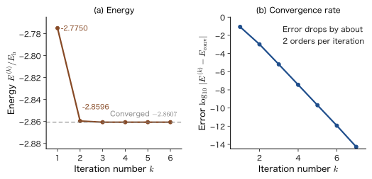

Chapter 37The Self-Consistent Field (SCF) and the Roothaan–Hall Equations — From Basis-Function Expansion to Computational Chemistry
When we walk through a crowded station concourse, we decide our path by watching the flow of the people around us. But the people around us are doing the same thing: they too decide their paths by watching the flow around them, which includes us. Everyone's path is determined by “the average flow of the other people,” and that flow is in turn the result of everyone's paths. This circularity of “using the answer to pose the question” also arises in the quantum mechanics of many-electron systems. In the Hartree–Fock equations of the previous chapter, a single electron moves in the average field created by the other electrons (the Coulomb potential and the effect of exchange). Yet it is the very orbitals we are trying to find that create that average field. The operator of the equation is determined by its own solution.
The method for resolving this circularity is the self-consistent field (SCF) method. Starting from suitable orbitals, we build the average field, solve for the orbitals again in that field, and rebuild the field from the new orbitals; we repeat this iteration until the input orbitals and the output orbitals agree (are self-consistent). Classical physics has the same idea. In Weiss's molecular field theory of ferromagnets, each spin feels the average magnetic field created by the surrounding spins and decides its orientation, and the average of those orientations in turn determines the field (this is the $\tanh$ formula for a paramagnet in AD 03, Chapter 51, Section 51.4 (in Japanese), reread so that the magnetic field is determined by the system's own magnetization). In this chapter, we first understand the idea of this iteration in Section 37.1.
The other task is to put the equations for the orbitals into a form that a computer can handle. Solving the orbitals of a molecule directly as a three-dimensional integro-differential equation is difficult. We therefore write the orbitals as linear combinations of basis functions $\psi_i=\sum_\mu C_{\mu i}\phi_\mu$ and replace the unknowns by the coefficients $C_{\mu i}$. This is exactly the idea of the linear variational method of Chapter 31. The variational condition becomes the matrix equation $FC=SC\varepsilon$ (the Roothaan–Hall equations), which is the secular equation of the form $H\bm{c}=ES\bm{c}$ made nonlinear. Since the matrix $F$ (the Fock matrix) contains the coefficients $C$, we solve it by SCF iteration. Energies are written in the hartree $E_{\mathrm h}$ of atomic units ($1\,E_{\mathrm h}=27.2\ \mathrm{eV}$).
These equations lie at the center of every quantum chemical calculation that uses Gaussian basis functions (the total energy of $-1.1167\,E_{\mathrm h}$ in the output of PySCF and similar programs, and the energies of the highest occupied orbital (HOMO) and the lowest unoccupied orbital (LUMO)), and they are also the foundation of the companion volumes “Computational Materials Science” (AD 05) and “Density Functional Theory” (AD 07), in which the Kohn–Sham equations are solved in a basis.
Map of this chapter.
- 37.1: The idea and procedure of SCF (solving by iteration).
- 37.2: The energy of a closed-shell molecule, the basis-function expansion, and the density matrix.
- 37.3: Deriving $FC=SC\varepsilon$ without skipping a single line, and solving it with $S^{-1/2}$.
- 37.4: Solving $\mathrm{H_2}$ (STO-3G) by hand, from $S_{12}=0.6593$ to $E=-1.1167\,E_{\mathrm h}$.
- 37.5: The iteration table for HeH$^+$, techniques for convergence, and RHF, UHF, and ROHF.
- 37.6: Electron correlation, and why RHF fails for the dissociation of $\mathrm{H_2}$.
- 37.7: The bridge to the Kohn–Sham equations, the output of PySCF, and computational cost (toward AD 05 and AD 07).
- Be able to explain the procedure for solving, by SCF iteration, the nonlinear problem in which the Fock operator depends on its own solution, together with the ideas of the convergence criterion, the initial guess, and DIIS
- Be able to derive the Hartree–Fock energy of a closed-shell molecule, $E=2\sum_ih_{ii}+\sum_{i,j}(2U_{ij}-J_{ij})+V_{\mathrm{nn}}$, by integrating over the spin first, and to count where the coefficients $2$ and $1$ come from
- Be able to introduce the basis-function expansion and the density matrix $P_{\mu\nu}=2\sum_iC_{\mu i}C_{\nu i}^*$, and to show that $\mathrm{Tr}(PS)=N$, $PSP=2P$, and $E=\tfrac12\sum P(h+F)+V_{\mathrm{nn}}$
- Be able to derive the Roothaan–Hall equations $FC=SC\varepsilon$ by the method of Lagrange multipliers, and to transform them with Löwdin's $S^{-1/2}$ into the ordinary eigenvalue problem $F'C'=C'\varepsilon$ and solve it
- Be able to solve the RHF problem of the hydrogen molecule (STO-3G, $R=1.4\,a_0$) by hand, and to obtain $\varepsilon_{\mathrm g}=-0.5782$ and $E=-1.1167\,E_{\mathrm h}$ from $S_{12}=0.6593$, $h_{11}=-1.1204$, and $\mel{11}{v}{11}=0.7746$
- Be able to read the SCF iteration table for HeH$^+$ and to explain why the energy error decreases by about two orders of magnitude per iteration (the variational property), how oscillating iterations are made to converge by damping and DIIS, and how RHF, UHF, and ROHF differ
- Be able to explain the electron correlation energy (He: $-1.14\ \mathrm{eV}$) and why, in the dissociation of $\mathrm{H_2}$, RHF fails and FCI succeeds (the ionic term, 50%)
- Understand that the Kohn–Sham equations are equations of the same form, in which the Fock exchange term is simply replaced by the local potential $v_{\mathrm{xc}}$; how to read the output of PySCF; and the scaling of the computational cost
Source notes: This chapter supplements material that is not in the original notes. Related notes: Yasuhide Mochizuki, “Physics Notes: Quantum Mechanics 3,” p. 45 (self-consistency), pp. 58–59 (linear variation and the method of Lagrange multipliers), pp. 84–85 (Gaussian basis).
37.1 The Self-Consistent Field (SCF) — Rebuilding the Equation from Its Own Solution
37.1.1 The operator depends on the solution — a nonlinear eigenvalue problem
The Hartree–Fock equation derived in the previous chapter is the one-electron eigenvalue equation satisfied by the occupied orbitals $\psi_i$:
\begin{equation} \hat{F}\,\psi_i=\varepsilon_i\,\psi_i \label{eq:37-hf} \end{equation}Here $\hat{F}$ is the Fock operator (Chapter 36, Section 36.5): it is the one-electron kinetic energy plus the attraction to the nuclei, $\hat{h}$, with the average potential produced by the other electrons (the Coulomb operator $\hat{U}_j$) and the effect of exchange (the exchange operator $\hat{J}_j$) added to it. The concrete form for a closed shell is written in Sections 37.2 and 37.3. For now, all we need to remember is that $\hat{U}_j$ and $\hat{J}_j$ are constructed from the occupied orbitals $\psi_j$. If we therefore regard the Fock operator as a function of the set of occupied orbitals $\{\psi_j\}$ and write it as $\hat{F}[\{\psi_j\}]$, Eq. \eqref{eq:37-hf} becomes
\begin{equation} \hat{F}\bigl[\{\psi_j\}\bigr]\,\psi_i=\varepsilon_i\,\psi_i \qquad(i=1,\dots,N/2) \label{eq:37-nonlin} \end{equation}The operator on the left-hand side of the equation contains the very solutions $\psi_j$ that we want to find on the right-hand side. To fix the operator we need the solutions, and to obtain the solutions we need the operator. This circularity is characteristic of a nonlinear equation in which the unknown appears on both sides—for example, “we want to know the radius $r$, but the equation has the form $r=f(r)$.”
Let us compare this with the linear variational method of Chapter 31. There the Hamiltonian $\hat{H}$ was fixed from the start, and diagonalizing the secular equation $H\bm{c}=ES\bm{c}$ obtained by expanding in basis functions gave the answer in a single step. The equation of this chapter is an eigenvalue problem of the same form, but it differs in an essential way: the matrix (operator) depends on the solution.
| Linear variational method (Chapter 31) | Hartree–Fock equation (this chapter) | |
|---|---|---|
| Operator and matrix | $\hat{H}$ ($H$) is fixed from the start | $\hat{F}$ ($F$) is constructed from the occupied orbitals (coefficients $C$) |
| How to solve | One diagonalization | Repeat the diagonalization until the solution no longer changes (SCF) |
| Number of solutions | The set of eigenvalues is uniquely determined | In general there may be several “self-consistent solutions” |
| Energy | The lowest eigenvalue is an upper bound on the ground-state energy | In the variational sense it is a minimized value, but solutions that are not necessarily minimum points also appear |
Intuition: Walking by watching the flow of others
In a station concourse, each person decides a course by looking at “the average flow of the people around,” and once everyone has decided a course, “the average flow of the people around” is determined. At first the flow is unknown, so each person sets off assuming that “everyone will walk in the same direction as I do”; then, looking at the flow that actually arises, each person corrects the course and re-examines the flow again. If this is repeated, the flow eventually stops changing. At that point, each person's course and the flow on which that person based the decision do not contradict each other (self-consistent). The SCF method is a way of doing this mathematically for the orbitals of the electrons.
37.1.2 The SCF procedure
Definition 37.1: The self-consistent field (SCF) method
The method of solving the nonlinear equation, Eq. \eqref{eq:37-nonlin}, by the following iteration is called the self-consistent field (SCF) method.
- Initial guess: Assume a set of occupied orbitals $\{\psi_j^{(0)}\}$ (in the language of the later Section 37.2, the density matrix $P^{(0)}$).
- Build the Fock operator: Assemble $\hat{F}^{(k)}=\hat{F}\bigl[\{\psi_j^{(k)}\}\bigr]$.
- Solve the eigenvalue problem: Solve $\hat{F}^{(k)}\psi=\varepsilon\psi$, and take the $N/2$ eigenfunctions with the lowest eigenvalues as the new occupied orbitals $\{\psi_j^{(k+1)}\}$ (electrons are placed two at a time, starting from the orbital of lowest energy).
- Check convergence: If the change in the energy or the density is smaller than the tolerance, stop. Otherwise set $k\to k+1$ and return to step 2.
When the iteration ends, the input orbitals $\{\psi^{(k)}\}$ and the output orbitals $\{\psi^{(k+1)}\}$ coincide, and the field produced by the orbitals does not contradict the orbitals obtained by solving in that field. The orbitals are then said to be self-consistent.
We summarize the flow of this iteration in Figure 37.1.
This method began in 1928, when Hartree obtained the orbitals of atoms by numerical iteration. There Hartree introduced the idea that an electron “moves in the average field produced by the other electrons,” together with the method of computing until the field obtained by the iteration and the orbitals agree, and named this the self-consistent field. Then, in the 1930s, Fock and Slater added the exchange term that arises from the Pauli exclusion principle (antisymmetrization), which gave the Hartree–Fock equation (previous chapter).
Application: Running SCF every time the nuclei move
In first-principles calculations of molecules and solids, the positions $\bm{R}$ of the atomic nuclei are fixed within the Born–Oppenheimer approximation (Chapter 33, Section 33.2), and the electronic problem is solved to obtain the energy $E(\bm{R})$. This $E(\bm{R})$ becomes the potential energy surface for the nuclei (Section 33.3). Therefore, in structure optimization and molecular dynamics (AD 07, Chapter 16 (in Japanese)), the SCF of the electron system is redone each time the positions of the nuclei are changed slightly. That is, it is a two-stage procedure: solve the electrons self-consistently first, then move the nuclei. In Section 37.4, we run SCF for $\mathrm{H_2}$ while varying $R$ and draw $E(R)$ (Figure 37.5).
37.1.3 When to stop the iteration, and the initial guess
The following criteria are used to terminate the iteration. (i) The change in the total energy $\lvert E^{(k+1)}-E^{(k)}\rvert$ is, for example, $10^{-6}\,E_{\mathrm h}$ or less. (ii) The change in the density matrix $\max_{\mu\nu}\lvert P_{\mu\nu}^{(k+1)}-P_{\mu\nu}^{(k)}\rvert$ is small. (iii) The norm of the quantity $FPS-SPF$ (shown in Section 37.3.6), which vanishes at the convergence point, is small. Actual programs combine these (the default in PySCF is a change in the energy of about $10^{-9}\,E_{\mathrm h}$).
For the initial guess, one uses (a) the eigenfunctions of the one-electron Hamiltonian $h$ that ignores the repulsion between electrons (the core Hamiltonian, corresponding to $P^{(0)}=0$; the examples in Section 37.5 start from this), (b) a superposition of the densities of isolated atoms, (c) a simple Hückel-type calculation, (d) the converged orbitals at a slightly earlier nuclear configuration, and so on. When the iteration oscillates or converges slowly, one mixes the new $P$ with the old $P$ (damping), or uses the DIIS method (Pulay, 1980), which combines past Fock matrices to predict the next one. The details of these are treated in Section 37.5.
37.1.4 The SCF solution is not necessarily a minimum
The point at which the SCF converges is a stationary point (a point where the gradient is 0) of the energy $E$, but it is not necessarily a minimum of the energy. There may also be several stationary points. Let us first look at how this appears in a much simpler classical problem.
Example 37.1: A self-consistent solution of Weiss's molecular field
In Weiss's molecular-field theory of the Ising model of a ferromagnet (each spin $s=\pm1$), one spin feels an effective magnetic field proportional to the average magnetization $m$ of the surrounding spins. In this effective field, the mean value of a spin at temperature $T$ is given by $\tanh$, in the same form as for a spin-$1/2$ paramagnet (AD 03, Chapter 51, Section 51.4 (in Japanese)). The self-consistency condition that this average coincide with $m$ can be written, using the critical temperature $T_{\mathrm c}$, as
\begin{equation} m=\tanh\!\left(\frac{T_{\mathrm c}}{T}\,m\right) \label{eq:37-weiss} \end{equation}Let $T=T_{\mathrm c}/2$ ($m=\tanh 2m$). (1) Starting from $m_0=0.1$, iterate $m_{k+1}=\tanh(2m_k)$ and find $m_1,\dots,m_5$. (2) Find the self-consistent solution $m^*$, and estimate by what factor the error shrinks in one iteration. (3) Verify that $m=0$ is also a solution of Eq. \eqref{eq:37-weiss}, and state its relation to the result of the iteration.
Solution. (1) $m_1=\tanh0.2=0.1974$, $m_2=\tanh0.3948=0.3754$, $m_3=\tanh0.7509=0.6357$, $m_4=\tanh1.2714=0.8542$, $m_5=\tanh1.7083=0.9364$. Continuing further gives $m_6=0.9539$, $m_7=0.9569$, $\dots$, and the iterates approach a constant value.
(2) The positive solution of $m=\tanh2m$ is $m^*=0.9575$ (for $m=0.9575$, $\tanh1.9150=0.9575$). Near the convergence point, the iteration map $f(m)=\tanh2m$ can be approximated by a straight line, $f(m)\simeq m^*+f'(m^*)(m-m^*)$, and the error $m_k-m^*$ is multiplied by $f'(m^*)$ at each step. Since $f'(m)=2\,(1-\tanh^22m)$, we have $f'(m^*)=2(1-0.9575^2)=0.166$. That is, one iteration reduces the error to about $1/6$ (Figure 37.2(b)).
(3) Substituting $m=0$ gives $\tanh0=0$, so it is indeed a solution. However, since $f'(0)=2\gt1$, if we start near $m=0$ (for example, from $m_0=0.1$), the error is magnified by a factor of about two at each step, and the iterates move away from $m=0$ ($0.1\to0.197\to0.375$ in (1)). Thus $m=0$ is an unstable self-consistent solution. Only when we start exactly from $m_0=0$ does the iteration stay at $m=0$. Note also that $m=0$ is a “highly symmetric” solution with no magnetization, whereas $m^*\ne0$ is a solution in which the symmetry is broken, and the latter has the lower free energy.
![Iteration of Weiss's molecular-field self-consistency equation m=tanh(2m). The left panel shows the relation between the input m_in and the output tanh(2 m_in) as a blue curve and m_out=m_in as a gray dashed line; the iteration starting from m_0=0.1 approaches m=0.9575 along a red staircase line. m=0 is also a solution but is unstable. The right panel shows the common logarithm of the error versus the number of iterations: for any of the initial values 0.1, 0.5, and 1, once the iteration is close enough to convergence, the error decreases along a straight line, by a factor of about six per iteration (the initial value 0.1 starts near the unstable m=0, so the first few iterations are slow).](figs/ch37_fig37-2.svg)
This example is a miniature of what happens in the Hartree–Fock SCF. (i) One looks for the point where the input and the output coincide (a fixed point) by iteration. (ii) The speed of convergence of the iteration is determined by the slope of the map at the convergence point. (iii) A highly symmetric solution ($m=0$; later, RHF) and a symmetry-broken solution ($m^*\ne0$; later, UHF) can coexist. In Sections 37.5 and 37.6 we check each of these for the electron problem.
37.2 Basis-Function Expansion and the Hartree–Fock Energy of Closed-Shell Molecules
37.2.1 Closed-shell molecules — integrating over spin first
We consider a molecule in which the number of electrons $N$ is even and all the electrons are paired (a closed-shell molecule). Each of the $N/2$ spatial orbitals $\psi_1,\dots,\psi_{N/2}$ holds one electron of spin $\alpha$ (↑) and one of spin $\beta$ (↓). In terms of spin orbitals, $\chi_i=\psi_i\alpha$ and $\bar{\chi}_i=\psi_i\beta$ (as in Chapter 35), and the wave function is a single Slater determinant, $\Phi=\lvert\psi_1\alpha\,\psi_1\beta\,\psi_2\alpha\,\psi_2\beta\cdots\rvert$. Because the $\alpha$ and $\beta$ electrons share the same spatial orbital, this approximation is called restricted Hartree–Fock (RHF).
In this chapter we use atomic units ($\hbar=m_{\mathrm e}=e_0=4\pi\varepsilon_0=1$; Chapter 33, Section 33.1), and express lengths in $a_0$ and energies in $E_{\mathrm h}$. The indices are used as follows: the occupied spatial orbitals are $i,j=1,\dots,N/2$, arbitrary molecular orbitals are $p,q$, and the basis functions are $\mu,\nu,\lambda,\sigma=1,\dots,M$. The one-electron operator is the sum of the kinetic energy and the attraction from all the atomic nuclei (charge $Z_A$, position $\bm{R}_A$):
\begin{equation} \hat{h}=-\frac12\nabla^2-\sum_A\frac{Z_A}{\lvert\bm{r}-\bm{R}_A\rvert} \label{eq:37-hhat} \end{equation}The one-electron and two-electron integrals for the spatial orbitals $\psi_i,\psi_j$ are the same as in Definitions 35.3 and 35.4 of Chapter 35:
\begin{align} h_{ij}&=\mel{\psi_i}{\hat{h}}{\psi_j},\qquad U_{ij}=\mel{\psi_i\psi_j}{v}{\psi_i\psi_j},\qquad J_{ij}=\mel{\psi_i\psi_j}{v}{\psi_j\psi_i}\quad\Bigl(v=\frac{1}{r_{12}}\Bigr) \label{eq:37-UJ} \end{align}(Note that these are integrals over spatial orbitals, which do not include spin.) Also, the Coulomb repulsion between the atomic nuclei is added to the total energy as the following constant, for fixed nuclear positions:
\begin{equation} V_{\mathrm{nn}}=\sum_{A\lt B}\frac{Z_AZ_B}{R_{AB}} \label{eq:37-Vnn} \end{equation}(where $R_{AB}=\lvert\bm{R}_A-\bm{R}_B\rvert$).
Notation: The $U,J$ of this book and the $J,K$ of Szabo–Ostlund and PySCF
Following its source, this book writes the Coulomb integral as $U_{ij}$ and the exchange integral as $J_{ij}$ (Chapter 35). Quantum chemistry textbooks such as Szabo–Ostlund, and quantum chemistry programs, write the Coulomb integral as $J_{ij}$ and the exchange integral as $K_{ij}$, so the correspondence is “$U_{ij}$ of this book = $J_{ij}$ of other books, and $J_{ij}$ of this book = $K_{ij}$ of other books” (the $J$ of the total angular momentum is a different thing). For the matrices built in the space of basis functions (from Section 37.2.4 on), to avoid this confusion we write the Coulomb matrix $J_{\mu\nu}$ and the exchange matrix $K_{\mu\nu}$ of other books as $G^{\mathrm C}_{\mu\nu}$ (Coulomb matrix) and $G^{\mathrm X}_{\mu\nu}$ (exchange matrix). Also, a unitary matrix is denoted $W$ (unrelated to the Coulomb integral $U$).
Theorem 37.1: Energy of the closed-shell Hartree–Fock (RHF) approximation
The energy (including the internuclear repulsion) of the Slater determinant obtained by putting one electron of spin $\alpha$ and one of spin $\beta$ into each of $N/2$ spatial orbitals $\psi_i$ is
\begin{equation} E_{\mathrm{RHF}}=2\sum_{i=1}^{N/2}h_{ii}+\sum_{i=1}^{N/2}\sum_{j=1}^{N/2}\bigl(2U_{ij}-J_{ij}\bigr)+V_{\mathrm{nn}} \label{eq:37-ERHF} \end{equation}where the spatial orbitals are mutually orthogonal and normalized.
Derivation: From a sum over spin orbitals to a sum over spatial orbitals
By Theorem 35.5 of Chapter 35, the energy of the electronic part of the Slater determinant of spin orbitals $\chi_a$ ($a=1,\dots,N$) is $\sum_ah_{aa}+\tfrac12\sum_{a,b}(U_{ab}-J_{ab})$. The occupied spin orbitals are the $N$ orbitals $\psi_i\alpha$ and $\psi_i\beta$, and the following relations hold:
$$ h_{aa}=h_{ii}\ \ (a=\psi_i\alpha\ \text{or}\ \psi_i\beta),\qquad U_{ab}=U_{ij},\qquad J_{ab}=\delta_{s_as_b}J_{ij} $$(They follow from the spin integration, as in Section 35.3.1 of Chapter 35.)
[i] One-electron term. Since each spatial orbital has two spin orbitals, $\sum_ah_{aa}=2\sum_ih_{ii}$.
[ii] Two-electron term. For a pair $(i,j)$ of spatial orbitals, there are four pairs $(a,b)$ of spin orbitals: $(\psi_i\alpha,\psi_j\alpha)$, $(\psi_i\alpha,\psi_j\beta)$, $(\psi_i\beta,\psi_j\alpha)$, $(\psi_i\beta,\psi_j\beta)$. $U_{ab}$ is $U_{ij}$ for all four, independent of the spin. $J_{ab}$ is $J_{ij}$ only for the first and the last, whose spins are parallel, and is 0 for the two antiparallel ones. Therefore
$$ \sum_{a,b}\bigl(U_{ab}-J_{ab}\bigr)=\sum_{i,j}\bigl(4U_{ij}-2J_{ij}\bigr),\qquad \frac12\sum_{a,b}\bigl(U_{ab}-J_{ab}\bigr)=\sum_{i,j}\bigl(2U_{ij}-J_{ij}\bigr). $$(The terms with $i=j$ may be included. Since $U_{ii}=J_{ii}$, the $i=j$ term is $2U_{ii}-J_{ii}=U_{ii}$, which equals the repulsion $U_{ii}$ of the one pair formed by the $\alpha$ and $\beta$ electrons of the same orbital.) Adding [i] and [ii], and adding the internuclear repulsion \eqref{eq:37-Vnn}, we obtain Eq. \eqref{eq:37-ERHF}.
∎
Question: Where do the coefficients $2$ and $1$ come from?
The $2$ in $2\sum h_{ii}$ is the number expressing “there are two electrons in one spatial orbital.” The $2$ and $1$ in $2U_{ij}-J_{ij}$ come from counting the electron pairs between the two orbitals $\psi_i,\psi_j$, each of which holds two electrons. From the two electrons of $\psi_i$ and the two electrons of $\psi_j$, four electron pairs can be formed. The Coulomb repulsion $U_{ij}$ acts on all four pairs. The exchange energy $-J_{ij}$, on the other hand, acts only on the two pairs in which the spin directions are aligned ($\alpha\alpha$ and $\beta\beta$). However, the sum $\sum_{i,j}$ counts both $(i,j)$ and $(j,i)$, so when the double counting of electron pairs ($\tfrac12$) is subtracted, the Coulomb term becomes $4/2=2$ and the exchange term becomes $2/2=1$. It helps to remember it as “two for Coulomb, one for exchange.”
Example 37.2: RHF energies of He and $\mathrm{H_2}$
Apply Eq. \eqref{eq:37-ERHF} to (1) the helium atom ($N=2$) and (2) the hydrogen molecule ($N=2$).
Solution. Both have $N/2=1$ occupied orbital $\psi_1$. (1) Eq. \eqref{eq:37-ERHF} gives $E=2h_{11}+(2U_{11}-J_{11})$, and since $U_{11}=J_{11}$, $E=2h_{11}+U_{11}$. There is only one nucleus, so $V_{\mathrm{nn}}=0$. This agrees with the $2h_{11}+U_{11}$ of Chapter 35. (2) If we denote the occupied orbital by $\sigma_{\mathrm g}$, then $E=2h_{\mathrm{gg}}+U_{\mathrm{gg}}+V_{\mathrm{nn}}$, with $V_{\mathrm{nn}}=1/R$. In both cases the result is $h$ added once for each electron plus the repulsion $U_{11}$ of the electron pair (one pair) added once, and the $J$ in $2U-J$ is cancelled by $U$ and does not remain. Only for $N=4$ or more does the $J_{ij}$ of $2U_{ij}-J_{ij}$ actually appear (Exercise 37.1).
37.2.2 Basis-function expansion (LCAO)
Next, we express the orbitals $\psi_i$ as linear combinations of $M$ predetermined basis functions $\phi_1,\dots,\phi_M$:
\begin{equation} \psi_i(\bm{r})=\sum_{\mu=1}^{M}C_{\mu i}\,\phi_\mu(\bm{r}) \label{eq:37-lcao} \end{equation}As the basis functions $\phi_\mu$ we often use atomic orbitals centered on the atomic nuclei (contracted Gaussian functions, such as the STO-$n$G of Chapter 32), so this expansion is called LCAO (linear combination of atomic orbitals). In what follows the basis functions are taken to be real functions (the coefficients $C_{\mu i}$ can then also be taken real), but we also write the complex conjugate $C^*_{\mu i}$ so as to keep the general case in view. The matrix $C$ whose $(\mu,i)$ component is the expansion coefficient $C_{\mu i}$ ($M$ rows and $M$ columns, covering all the molecular orbitals $i=1,\dots,M$, of which the first $N/2$ are the occupied orbitals) is the unknown to be determined.
The basis functions are in general not orthogonal to one another. We therefore define the overlap matrix $S$ and the matrix of one-electron integrals $h$ by
\begin{equation} S_{\mu\nu}=\braket{\phi_\mu}{\phi_\nu},\qquad h_{\mu\nu}=\mel{\phi_\mu}{\hat{h}}{\phi_\nu}=T_{\mu\nu}+V_{\mu\nu} \label{eq:37-Sh} \end{equation}Here $T_{\mu\nu}=\mel{\phi_\mu}{-\tfrac12\nabla^2}{\phi_\nu}$ is the kinetic-energy integral and $V_{\mu\nu}=-\sum_AZ_A\mel{\phi_\mu}{1/\lvert\bm{r}-\bm{R}_A\rvert}{\phi_\nu}$ is the integral of the attraction to the nuclei. For two electrons, we use the two-electron integral in physicists' notation (Chapter 35):
\begin{equation} \mel{\mu\nu}{v}{\lambda\sigma}=\iint\phi_\mu^*(\bm{r}_1)\,\phi_\nu^*(\bm{r}_2)\,\frac{1}{r_{12}}\,\phi_\lambda(\bm{r}_1)\,\phi_\sigma(\bm{r}_2)\,\dd\bm{r}_1\dd\bm{r}_2 \label{eq:37-eri} \end{equation}Here $\mu,\lambda$ are the orbitals of electron 1 and $\nu,\sigma$ are the orbitals of electron 2 (in the bra $\mu\nu$ and the ket $\lambda\sigma$, electrons 1 and 2 are listed in the same order). If the basis functions are real, the value does not change under eight kinds of interchanges, such as $\mel{\mu\nu}{v}{\lambda\sigma}=\mel{\nu\mu}{v}{\sigma\lambda}=\mel{\lambda\sigma}{v}{\mu\nu}=\mel{\mu\sigma}{v}{\lambda\nu}\cdots$, so the number of independent integrals is about $M^4/8$.
The condition that the molecular orbitals $\psi_i$ be orthonormal, $\braket{\psi_i}{\psi_j}=\delta_{ij}$, becomes, on substituting Eq. \eqref{eq:37-lcao},
\begin{equation} \braket{\psi_i}{\psi_j}=\sum_{\mu\nu}C^*_{\mu i}\,S_{\mu\nu}\,C_{\nu j}=\delta_{ij}\qquad\text{that is}\qquad C^\dagger SC=1 \label{eq:37-CSC} \end{equation}(Here $C^\dagger=(C^*)^{\mathrm T}$ is the Hermitian conjugate of $C$, with $(C^\dagger)_{i\mu}=C^*_{\mu i}$. What differs from $C^\dagger C=1$ for an orthogonal basis is that $S=1$ does not hold.) Hereafter we write the trace of a matrix $A$ as $\mathrm{Tr}\,A=\sum_\mu A_{\mu\mu}$.
Notation: Physicists' notation and chemists' notation (two-electron integrals in PySCF)
As stated in Table 35.2 of Chapter 35, there are two ways to write a two-electron integral. The physicists' notation $\mel{\mu\nu}{v}{\lambda\sigma}$ used in this book is related to the chemists' notation, in which $1/r_{12}$ is sandwiched between two functions of the same electron's coordinates, $(\mu\lambda\vert\nu\sigma)=\iint\phi_\mu^*(\bm{r}_1)\phi_\lambda(\bm{r}_1)\frac{1}{r_{12}}\phi_\nu^*(\bm{r}_2)\phi_\sigma(\bm{r}_2)\,\dd\bm{r}_1\dd\bm{r}_2$, by
$$ \mel{\mu\nu}{v}{\lambda\sigma}=(\mu\lambda\vert\nu\sigma) $$(In Chapter 35 we wrote the chemists' notation with square brackets, $[\mu\lambda\vert\nu\sigma]$.) In the chemists' notation, the integral can be read as the Coulomb repulsion between “the charge distribution $\phi_\mu^*\phi_\lambda$” and “the charge distribution $\phi_\nu^*\phi_\sigma$,” so the symmetry of the indices (such as $(\mu\lambda\vert\nu\sigma)=(\lambda\mu\vert\nu\sigma)=(\nu\sigma\vert\mu\lambda)$) is easy to see. The two-electron integrals (int2e) of programs such as PySCF are stored in the chemists' notation. To build an array in this book's physicists' notation, interchange the indices: phys = eri.transpose(0, 2, 1, 3). The companion volume AD 05 also uses the same physicists' notation as this book.
If we expand in the basis, the integrals over spatial orbitals, Eq. \eqref{eq:37-UJ}, can be written in terms of the integrals over basis functions and the coefficients:
\begin{equation} h_{ij}=\sum_{\mu\nu}C^*_{\mu i}\,h_{\mu\nu}\,C_{\nu j},\qquad U_{ij}=\sum_{\mu\nu\lambda\sigma}C^*_{\mu i}C^*_{\lambda j}\,C_{\nu i}C_{\sigma j}\,\mel{\mu\lambda}{v}{\nu\sigma},\qquad J_{ij}=\sum_{\mu\nu\lambda\sigma}C^*_{\mu i}C^*_{\lambda j}\,C_{\nu j}C_{\sigma i}\,\mel{\mu\lambda}{v}{\nu\sigma} \label{eq:37-UJC} \end{equation}In $U_{ij}$, electron 1 is in $\psi_i$ (bra side $\mu$, ket side $\nu$) and electron 2 is in $\psi_j$ (bra side $\lambda$, ket side $\sigma$), and the orbitals are not changed. In $J_{ij}$, the ket side of electron 1 is $\psi_j$ ($\nu$) and the ket side of electron 2 is $\psi_i$ ($\sigma$), and the orbitals are interchanged.
37.2.3 Density matrix
When Eq. \eqref{eq:37-ERHF} is written in terms of the coefficients $C$, the coefficients of the occupied orbitals always appear in the same combination $\sum_iC_{\mu i}C^*_{\nu i}$. We bundle this combination together and give it a name.
Definition 37.2: Density matrix (charge and bond-order matrix)
The $M\times M$ matrix built from the coefficients $C_{\mu i}$ ($i=1,\dots,N/2$) of the occupied orbitals of a closed shell,
\begin{equation} P_{\mu\nu}=2\sum_{i=1}^{N/2}C_{\mu i}\,C^*_{\nu i}\qquad\bigl(P=2\,C_{\mathrm{occ}}C_{\mathrm{occ}}^\dagger\bigr) \label{eq:37-P} \end{equation}is called the density matrix. Here $C_{\mathrm{occ}}$ is the $M\times(N/2)$ matrix obtained by extracting only the first $N/2$ columns of $C$ (the coefficients of the occupied orbitals). The leading factor $2$ expresses that two electrons occupy each orbital.
The origin of this name is that the electron density $\rho(\bm{r})=2\sum_i\lvert\psi_i(\bm{r})\rvert^2$ (two electrons per occupied orbital), upon substitution of Eq. \eqref{eq:37-lcao}, becomes
\begin{equation} \rho(\bm{r})=2\sum_i\sum_{\mu\nu}C_{\mu i}C^*_{\nu i}\,\phi_\mu(\bm{r})\phi_\nu^*(\bm{r})=\sum_{\mu\nu}P_{\mu\nu}\,\phi_\mu(\bm{r})\,\phi_\nu^*(\bm{r}) \label{eq:37-rho} \end{equation}The electron density is the sum of the products of basis functions $\phi_\mu\phi_\nu^*$, with the components $P_{\mu\nu}$ of the density matrix as weights.
Theorem 37.2: Properties of the density matrix
- $P$ is a Hermitian matrix: $P_{\nu\mu}=P^*_{\mu\nu}$ (real symmetric if the coefficients are real).
- Number of electrons: $\mathrm{Tr}(PS)=\sum_{\mu\nu}P_{\mu\nu}S_{\nu\mu}=N$.
- Idempotency: $PSP=2P$.
- Under a linear transformation among the occupied orbitals, $C_{\mathrm{occ}}\to C_{\mathrm{occ}}W$ ($W$ is a unitary matrix with $N/2$ rows and $N/2$ columns), $P$ does not change.
Proof
(1) Taking the complex conjugate of Eq. \eqref{eq:37-P} and interchanging the indices gives $P^*_{\nu\mu}=2\sum_iC^*_{\nu i}C_{\mu i}=P_{\mu\nu}$.
(2) $\mathrm{Tr}(PS)=2\sum_i\sum_{\mu\nu}C_{\mu i}C^*_{\nu i}S_{\nu\mu}=2\sum_i\sum_{\mu\nu}C^*_{\nu i}S_{\nu\mu}C_{\mu i}=2\sum_i\braket{\psi_i}{\psi_i}=2\cdot\dfrac N2=N$. (We used the normalization condition \eqref{eq:37-CSC}. This is also the integral of the electron density, $\int\rho\,\dd\bm{r}=\sum P_{\mu\nu}S_{\nu\mu}=N$.)
(3) We have $PSP=4\sum_{i,j}C_{\mathrm{occ},i}\bigl(C^\dagger_{\mathrm{occ},i}SC_{\mathrm{occ},j}\bigr)C^\dagger_{\mathrm{occ},j}$, and the expression in parentheses is $\delta_{ij}$, so $PSP=4\sum_iC_{\mathrm{occ},i}C^\dagger_{\mathrm{occ},i}=2P$.
(4) If $C_{\mathrm{occ}}\to C_{\mathrm{occ}}W$, then $P\to 2C_{\mathrm{occ}}WW^\dagger C^\dagger_{\mathrm{occ}}=2C_{\mathrm{occ}}C^\dagger_{\mathrm{occ}}=P$.
∎
Property (4) is the matrix expression of the fact that what the Slater determinant fixes is not the individual orbitals but only the subspace spanned by the occupied orbitals (the invariance under orbital transformations in Chapter 33, Section 33.6). Property (3) means that $P/2$ is “the projection onto the subspace spanned by the occupied orbitals, when $S$ is taken as the inner product.”
37.2.4 Writing the energy in terms of the density matrix
Let us rewrite each term of Eq. \eqref{eq:37-ERHF} in terms of the density matrix.
Theorem 37.3: Expression for the RHF energy in terms of the density matrix
The RHF energy \eqref{eq:37-ERHF} in the basis-function expansion can be written, using the density matrix $P$, as
\begin{equation} E_{\mathrm{RHF}}=\sum_{\mu\nu}P_{\nu\mu}h_{\mu\nu}+\frac12\sum_{\mu\nu\lambda\sigma}P_{\nu\mu}P_{\sigma\lambda}\Bigl[\mel{\mu\lambda}{v}{\nu\sigma}-\frac12\mel{\mu\lambda}{v}{\sigma\nu}\Bigr]+V_{\mathrm{nn}} \label{eq:37-EP} \end{equation}Furthermore, with the Fock matrix $F=h+G$, $G=G^{\mathrm C}-\tfrac12G^{\mathrm X}$ (the Coulomb matrix $G^{\mathrm C}_{\mu\nu}=\sum_{\lambda\sigma}P_{\sigma\lambda}\mel{\mu\lambda}{v}{\nu\sigma}$ and the exchange matrix $G^{\mathrm X}_{\mu\nu}=\sum_{\lambda\sigma}P_{\sigma\lambda}\mel{\mu\lambda}{v}{\sigma\nu}$), the equality
\begin{equation} E_{\mathrm{RHF}}=\frac12\sum_{\mu\nu}P_{\nu\mu}\bigl(h_{\mu\nu}+F_{\mu\nu}\bigr)+V_{\mathrm{nn}}=\frac12\,\mathrm{Tr}\bigl[P(h+F)\bigr]+V_{\mathrm{nn}} \label{eq:37-EhF} \end{equation}holds.
Derivation
Substitute $h_{ij}$, $U_{ij}$, and $J_{ij}$ of Eq. \eqref{eq:37-UJC} into Eq. \eqref{eq:37-ERHF}, and collect the sums over the occupied orbitals into the density matrix. We use $\sum_iC_{\nu i}C^*_{\mu i}=\tfrac12P_{\nu\mu}$.
One-electron term. $2\sum_ih_{ii}=2\sum_{\mu\nu}\bigl(\sum_iC^*_{\mu i}C_{\nu i}\bigr)h_{\mu\nu}=\sum_{\mu\nu}P_{\nu\mu}h_{\mu\nu}=\mathrm{Tr}(Ph)$.
Coulomb term. $\sum_{i,j}U_{ij}=\sum_{\mu\nu\lambda\sigma}\bigl(\sum_iC^*_{\mu i}C_{\nu i}\bigr)\bigl(\sum_jC^*_{\lambda j}C_{\sigma j}\bigr)\mel{\mu\lambda}{v}{\nu\sigma}=\tfrac14\sum P_{\nu\mu}P_{\sigma\lambda}\mel{\mu\lambda}{v}{\nu\sigma}$. Therefore $2\sum_{i,j}U_{ij}=\tfrac12\sum P_{\nu\mu}P_{\sigma\lambda}\mel{\mu\lambda}{v}{\nu\sigma}$.
Exchange term. $\sum_{i,j}J_{ij}=\sum\bigl(\sum_iC^*_{\mu i}C_{\sigma i}\bigr)\bigl(\sum_jC^*_{\lambda j}C_{\nu j}\bigr)\mel{\mu\lambda}{v}{\nu\sigma}=\tfrac14\sum P_{\sigma\mu}P_{\nu\lambda}\mel{\mu\lambda}{v}{\nu\sigma}$. Interchanging the names of the summation indices $\nu,\sigma$ turns this into $\tfrac14\sum P_{\nu\mu}P_{\sigma\lambda}\mel{\mu\lambda}{v}{\sigma\nu}$.
Combining the two-electron terms, $\sum_{i,j}(2U_{ij}-J_{ij})=\tfrac12\sum P_{\nu\mu}P_{\sigma\lambda}\bigl[\mel{\mu\lambda}{v}{\nu\sigma}-\tfrac12\mel{\mu\lambda}{v}{\sigma\nu}\bigr]$. This is Eq. \eqref{eq:37-EP}. For Eq. \eqref{eq:37-EhF}, it suffices to use the fact that, from the definition of $G$, $\tfrac12\sum P_{\nu\mu}G_{\mu\nu}=\tfrac12\sum P_{\nu\mu}P_{\sigma\lambda}[\cdots]$, and to rewrite $\mathrm{Tr}(Ph)+\tfrac12\mathrm{Tr}(PG)=\tfrac12\mathrm{Tr}[P(h+h+G)]=\tfrac12\mathrm{Tr}[P(h+F)]$.
∎
Note that a factor “$\tfrac12$” appears in Eq. \eqref{eq:37-EhF}. The term $\mathrm{Tr}(Ph)$ is taken as it is, while the electron–electron repulsion term $\tfrac12\mathrm{Tr}(PG)$ carries a factor $\tfrac12$ to avoid double counting of electron pairs; together they give $\tfrac12\mathrm{Tr}[P(h+F)]$. If, on the other hand, we extract only $\mathrm{Tr}(PF)$, it equals $\mathrm{Tr}(Ph)+\mathrm{Tr}(PG)$, and the electron–electron repulsion is doubled. The same circumstance explains why the sum of the orbital energies is not the total energy (Section 37.3.6).
Example 37.3: The helium atom (one basis function) — an SCF that needs no iteration
Represent the 1s orbital of the helium atom by a single contracted Gaussian function $\phi_1$ of STO-3G (Slater exponent $\zeta=1.6875$) ($M=1$, $S_{11}=1$). Then $h_{11}=-1.9310\,E_{\mathrm h}$ and $\mel{11}{v}{11}=1.0542\,E_{\mathrm h}$. Find the RHF energy $E$ and the orbital energy $\varepsilon$ using Eq. \eqref{eq:37-EhF}.
Solution. Since $M=1$, the occupied orbital is $\psi_1=C_{11}\phi_1$, and the normalization condition \eqref{eq:37-CSC}, $C_{11}^2S_{11}=1$, gives $C_{11}=1$. The density matrix is $P_{11}=2C_{11}^2=2$ (two electrons), which is fixed without any iteration. The Fock matrix is $F_{11}=h_{11}+P_{11}\bigl[\mel{11}{v}{11}-\tfrac12\mel{11}{v}{11}\bigr]=h_{11}+\mel{11}{v}{11}=-1.9310+1.0542=-0.8768\,E_{\mathrm h}$. Since there is only one nucleus, $V_{\mathrm{nn}}=0$, and from Eq. \eqref{eq:37-EhF}
$$ E=\tfrac12P_{11}(h_{11}+F_{11})=h_{11}+F_{11}=-1.9310+(-0.8768)=-2.8078\,E_{\mathrm h}\ (=-76.40\ \mathrm{eV}). $$This is the same as $2h_{11}+U_{11}$ ($U_{11}=\mel{11}{v}{11}$). The orbital energy is $\varepsilon=F_{11}=-0.8768\,E_{\mathrm h}$, which by Koopmans' theorem (Chapter 36) gives an ionization energy of $23.86\ \mathrm{eV}$ (the experimental value is $24.59\ \mathrm{eV}$). This one-basis-function result $-2.8078\,E_{\mathrm h}$ lies $0.054\,E_{\mathrm h}$ ($1.5\ \mathrm{eV}$) above the Hartree–Fock limit $-2.8617\,E_{\mathrm h}$. Since no freedom to change the shape of the orbital is left in the basis, nothing changes in the SCF iterations (the error is due to basis-set incompleteness). The iterations become meaningful when $M\ge2$ and the shape of the orbital can vary (Sections 37.4 and 37.5).
Example 37.4: The density matrix of the hydrogen molecule
For the minimal basis $\{\phi_1,\phi_2\}$ of the hydrogen molecule (the 1s orbital of each hydrogen atom), let the overlap integral be $S_{12}=0.6593$ ($S_{11}=S_{22}=1$). Assuming that two electrons occupy the bonding orbital $\psi_{\mathrm g}=C_1(\phi_1+\phi_2)$, (1) determine $C_1$ from the normalization, (2) find the density matrix $P$, and (3) verify that $\mathrm{Tr}(PS)=2$ and $PSP=2P$.
Solution. (1) From $\braket{\psi_{\mathrm g}}{\psi_{\mathrm g}}=C_1^2(S_{11}+2S_{12}+S_{22})=2C_1^2(1+S_{12})=1$, we obtain $C_1=1/\sqrt{2(1+S_{12})}=1/\sqrt{3.3186}=0.5489$.
(2) There is one occupied orbital, and $P_{\mu\nu}=2C_1^2=\dfrac{1}{1+S_{12}}=0.6027$ (all the components $\mu,\nu=1,2$ are equal): $P=0.6027\begin{pmatrix}1&1\\1&1\end{pmatrix}$.
(3) Using $S=\begin{pmatrix}1&S_{12}\\S_{12}&1\end{pmatrix}$, we have $\mathrm{Tr}(PS)=P_{11}S_{11}+P_{12}S_{21}+P_{21}S_{12}+P_{22}S_{22}=0.6027(1+2S_{12}+1)=0.6027\times3.3186=2.000$. Also, $PS=0.6027\begin{pmatrix}1+S_{12}&1+S_{12}\\1+S_{12}&1+S_{12}\end{pmatrix}=\begin{pmatrix}1&1\\1&1\end{pmatrix}$ (since $0.6027\times1.6593=1$), and then $PSP=\begin{pmatrix}1&1\\1&1\end{pmatrix}\cdot0.6027\begin{pmatrix}1&1\\1&1\end{pmatrix}=0.6027\begin{pmatrix}2&2\\2&2\end{pmatrix}=2P$ holds.
37.3 Derivation of the Roothaan–Hall Equations $FC=SC\varepsilon$
37.3.1 Setting up the variational problem
The RHF energy, Eq. \eqref{eq:37-EP}, is a function $E[C]$ of the coefficients $C_{\mu i}$ (and $C^*_{\mu i}$). The best orbitals are given by the $C$ that minimizes the energy; however, we must keep the constraint that the orbitals be orthonormal, Eq. \eqref{eq:37-CSC}, $\braket{\psi_i}{\psi_j}=\delta_{ij}$ ($i,j=1,\dots,N/2$). A constrained extremum problem is solved by the method of Lagrange multipliers (University Mathematics, Chapter 6, Section 6.7). In the linear variational method of Chapter 31 (Section 31.6.2), we derived the secular equation with only a single constraint, the normalization condition for one orbital. What differs this time is that, because the electrons occupy $N/2$ orbitals, the number of constraints increases to $(N/2)^2$, and in addition the Coulomb and exchange terms in the energy become quartic in $C$ (fourth-degree polynomials). We now derive once more, by varying the coefficients, the Hartree–Fock equations that we obtained in the previous chapter (Chapter 36, Section 36.4) by varying the orbitals themselves.
We define the Lagrangian by multiplying the constraints $\braket{\psi_i}{\psi_j}-\delta_{ij}=0$ by multipliers $\varepsilon_{ji}$ and adding them to the energy:
\begin{equation} L=E_{\mathrm{RHF}}-2\sum_{i,j=1}^{N/2}\varepsilon_{ji}\Bigl(\sum_{\mu\nu}C^*_{\mu i}S_{\mu\nu}C_{\nu j}-\delta_{ij}\Bigr) \label{eq:37-L} \end{equation}(the leading $2$ is a factor included in the definition of the multipliers to simplify the later equations). Interchanging $i$ and $j$ turns the constraint $\braket{\psi_i}{\psi_j}=\delta_{ij}$ into its complex conjugate, so for $L$ to be real it suffices to take the matrix of multipliers $\varepsilon=(\varepsilon_{ji})$ to be a Hermitian matrix, $\varepsilon_{ji}^*=\varepsilon_{ij}$. Furthermore, since the coefficients are in general complex numbers, instead of varying the real and imaginary parts independently, we regard $C_{\mu i}$ and $C^*_{\mu i}$ as independent variables, differentiate $L$ with respect to $C^*_{\mu k}$, and set the result equal to 0. (This is the same as treating the orbitals $\chi$ and $\chi^*$ independently in Chapter 36. Differentiating with respect to $C_{\mu k}$ merely gives the complex conjugate of the equation, with no new information.)
37.3.2 Differentiation with respect to $C^*_{\mu k}$
Derivation: Computing $\partial L/\partial C^*_{\mu k}=0$ term by term
As we saw in Eq. \eqref{eq:37-UJC}, each term of $E_{\mathrm{RHF}}$ is a polynomial of degree one or two in $C^*$ and of degree one or two in $C$. To differentiate with respect to $C^*_{\mu k}$, we count the places where $C^*_{\mu k}$ appears.
[i] One-electron term $2\sum_ih_{ii}=2\sum_i\sum_{\mu'\nu}C^*_{\mu'i}h_{\mu'\nu}C_{\nu i}$. $C^*_{\mu k}$ appears only when $i=k$ and $\mu'=\mu$, so
$$ \frac{\partial}{\partial C^*_{\mu k}}\Bigl(2\sum_ih_{ii}\Bigr)=2\sum_\nu h_{\mu\nu}C_{\nu k}. $$[ii] Coulomb term $2\sum_{i,j}U_{ij}$, $U_{ij}=\sum C^*_{\mu'i}C^*_{\lambda j}C_{\nu i}C_{\sigma j}\mel{\mu'\lambda}{v}{\nu\sigma}$. $C^*$ appears in two places ($C^*_{\mu'i}$ and $C^*_{\lambda j}$). The first place ($i=k$, $\mu'=\mu$) gives
$$ \sum_{j}\sum_{\nu\lambda\sigma}C^*_{\lambda j}C_{\nu k}C_{\sigma j}\mel{\mu\lambda}{v}{\nu\sigma}. $$The second place ($j=k$, $\lambda=\mu$) gives
$$ \sum_{i}\sum_{\mu'\nu\sigma}C^*_{\mu'i}C_{\nu i}C_{\sigma k}\mel{\mu'\mu}{v}{\nu\sigma} $$In this second expression, interchanging the names of electron 1 and electron 2 does not change $1/r_{12}$, so $\mel{\mu'\mu}{v}{\nu\sigma}=\mel{\mu\mu'}{v}{\sigma\nu}$. Furthermore, relabeling the summation indices as $i\to j$, $\mu'\to\lambda$, $\nu\leftrightarrow\sigma$ makes it exactly the same as the expression from the first place. $E$ is a fourth-degree polynomial in $C^*$ and $C$, and since $C^*$ appears in two places, the derivative is twice the contribution of the first place. Using $\sum_jC^*_{\lambda j}C_{\sigma j}=\tfrac12P_{\sigma\lambda}$, we obtain
$$ \frac{\partial}{\partial C^*_{\mu k}}\Bigl(2\sum_{i,j}U_{ij}\Bigr)=2\times2\sum_{\nu\lambda\sigma}C_{\nu k}\cdot\frac12P_{\sigma\lambda}\mel{\mu\lambda}{v}{\nu\sigma}=2\sum_\nu\Bigl[\sum_{\lambda\sigma}P_{\sigma\lambda}\mel{\mu\lambda}{v}{\nu\sigma}\Bigr]C_{\nu k}. $$[iii] Exchange term $-\sum_{i,j}J_{ij}$, $J_{ij}=\sum C^*_{\mu'i}C^*_{\lambda j}C_{\nu j}C_{\sigma i}\mel{\mu'\lambda}{v}{\nu\sigma}$. Here too $C^*$ appears in two places. The second place ($j=k$, $\lambda=\mu$) is $\sum_i\sum_{\mu'\nu\sigma}C^*_{\mu'i}C_{\nu k}C_{\sigma i}\mel{\mu'\mu}{v}{\nu\sigma}$, which coincides with the first place under the same relabeling of names as in [ii] and gives the same contribution. The first place ($i=k$, $\mu'=\mu$) is $\sum_j\sum_{\nu\lambda\sigma}C^*_{\lambda j}C_{\nu j}C_{\sigma k}\mel{\mu\lambda}{v}{\nu\sigma}=\sum_{\nu\lambda\sigma}\tfrac12P_{\nu\lambda}C_{\sigma k}\mel{\mu\lambda}{v}{\nu\sigma}$, and multiplying by the sign $-1$ and by a factor of two gives
$$ \frac{\partial}{\partial C^*_{\mu k}}\Bigl(-\sum_{i,j}J_{ij}\Bigr)=-\sum_{\sigma}\Bigl[\sum_{\lambda\nu}P_{\nu\lambda}\mel{\mu\lambda}{v}{\nu\sigma}\Bigr]C_{\sigma k}=-\sum_\nu\Bigl[\sum_{\lambda\sigma}P_{\sigma\lambda}\mel{\mu\lambda}{v}{\sigma\nu}\Bigr]C_{\nu k}. $$(In the last equality, we interchanged the names of the summation indices $\nu$ and $\sigma$.)
[iv] Constraint term $-2\sum_{i,j}\varepsilon_{ji}\sum_{\mu'\nu}C^*_{\mu'i}S_{\mu'\nu}C_{\nu j}$. $C^*_{\mu k}$ appears only when $i=k$ and $\mu'=\mu$, so
$$ \frac{\partial}{\partial C^*_{\mu k}}\Bigl[-2\sum_{i,j}\varepsilon_{ji}\braket{\psi_i}{\psi_j}\Bigr]=-2\sum_j\sum_\nu S_{\mu\nu}C_{\nu j}\,\varepsilon_{jk}. $$[v] Collecting the terms. Adding [i]–[iii] gives $2\sum_\nu\Bigl\{h_{\mu\nu}+\sum_{\lambda\sigma}P_{\sigma\lambda}\Bigl[\mel{\mu\lambda}{v}{\nu\sigma}-\tfrac12\mel{\mu\lambda}{v}{\sigma\nu}\Bigr]\Bigr\}C_{\nu k}=2\sum_\nu F_{\mu\nu}C_{\nu k}$ ($F_{\mu\nu}$ is the $h_{\mu\nu}+G_{\mu\nu}$ of Theorem 37.3). Therefore
$$ \frac{\partial L}{\partial C^*_{\mu k}}=2\sum_\nu F_{\mu\nu}C_{\nu k}-2\sum_j\sum_\nu S_{\mu\nu}C_{\nu j}\,\varepsilon_{jk}=0 . $$∎
Arranging this for all $\mu=1,\dots,M$ and $k=1,\dots,N/2$, we obtain a matrix equality.
Theorem 37.4: The Roothaan–Hall equations
In the closed-shell Hartree–Fock approximation, the condition satisfied by the coefficients $C$ of the basis-function expansion Eq. \eqref{eq:37-lcao} is
\begin{equation} FC=SC\varepsilon \label{eq:37-RH} \end{equation}Here $S$ is the overlap matrix and $\varepsilon$ is the matrix of multipliers, and the Fock matrix $F$ is given by
\begin{equation} F_{\mu\nu}=h_{\mu\nu}+\sum_{\lambda\sigma}P_{\sigma\lambda}\Bigl[\mel{\mu\lambda}{v}{\nu\sigma}-\frac12\mel{\mu\lambda}{v}{\sigma\nu}\Bigr],\qquad P_{\sigma\lambda}=2\sum_{i=1}^{N/2}C_{\sigma i}C^*_{\lambda i} \label{eq:37-F} \end{equation}When the basis functions are real and the coefficients can also be taken real, $P$ is a symmetric matrix, $P_{\sigma\lambda}=P_{\lambda\sigma}$.
Eq. \eqref{eq:37-RH} closely resembles $H\bm{c}=ES\bm{c}$ of Chapter 31. The correspondence is $H\to F$, $\bm{c}\to C$ (each column is one orbital), and $E\to\varepsilon$. The only difference is that $F$ contains $P$ (that is, the solution $C$). Because this equation uses a matrix $F$ that is determined by the solution, it is solved by the SCF iteration of Section 37.1.
37.3.3 Relation to the Fock operator — as a projection of the integro-differential equation
The elements of the Fock matrix are the matrix elements of the Fock operator of the previous chapter. For a closed shell, we define the Coulomb operator and the exchange operator for a spatial orbital $\psi_j$ in a form with the spin integrated out.
Definition 37.3: The closed-shell Fock operator
For an occupied spatial orbital $\psi_j$, define the operators that act on an arbitrary function $f(\bm{r})$ by
\begin{equation} \bigl(\hat{U}_jf\bigr)(\bm{r}_1)=\Bigl[\int\frac{\lvert\psi_j(\bm{r}_2)\rvert^2}{r_{12}}\dd\bm{r}_2\Bigr]f(\bm{r}_1),\qquad \bigl(\hat{J}_jf\bigr)(\bm{r}_1)=\Bigl[\int\frac{\psi_j^*(\bm{r}_2)f(\bm{r}_2)}{r_{12}}\dd\bm{r}_2\Bigr]\psi_j(\bm{r}_1) \label{eq:37-UJop} \end{equation}Using these operators, the operator
\begin{equation} \hat{F}=\hat{h}+\sum_{j=1}^{N/2}\bigl(2\hat{U}_j-\hat{J}_j\bigr) \label{eq:37-Fop} \end{equation}is called the closed-shell Fock operator.
The $\hat{U}_b$ and $\hat{J}_b$ of the previous chapter are operators acting on spin orbitals, and the Fock operator was $\hat{F}=\hat{h}+\sum_b(\hat{U}_b-\hat{J}_b)$ ($b$ runs over the $N$ spin orbitals). The Coulomb term $\hat{U}$ from the two occupied spin orbitals $\psi_j\alpha$ and $\psi_j\beta$ is the same $\hat{U}_j$ regardless of spin, so it becomes $2\hat{U}_j$. The exchange term $\hat{J}$, on the other hand, comes only from the one of the two whose spin matches (either $\psi_j\alpha$ or $\psi_j\beta$), so it is a single copy of $\hat{J}_j$. This is the origin of the $2$ and the $1$ in Eq. \eqref{eq:37-Fop}, and it is the same reasoning as for $2U_{ij}-J_{ij}$ in Theorem 37.1.
Taking the matrix elements between basis functions and using $\sum_jC^*_{\lambda j}C_{\sigma j}=\tfrac12P_{\sigma\lambda}$ and the like, we can verify that $\mel{\phi_\mu}{2\sum_j\hat{U}_j}{\phi_\nu}=\sum_{\lambda\sigma}P_{\sigma\lambda}\mel{\mu\lambda}{v}{\nu\sigma}$ and $\mel{\phi_\mu}{\sum_j\hat{J}_j}{\phi_\nu}=\tfrac12\sum_{\lambda\sigma}P_{\sigma\lambda}\mel{\mu\lambda}{v}{\sigma\nu}$ (for example, for the latter, $\mel{\phi_\mu}{\hat{J}_j}{\phi_\nu}=\iint\phi_\mu^*(\bm{r}_1)\psi_j(\bm{r}_1)\frac{1}{r_{12}}\psi_j^*(\bm{r}_2)\phi_\nu(\bm{r}_2)=\sum_{\lambda\sigma}C_{\sigma j}C^*_{\lambda j}\mel{\mu\lambda}{v}{\sigma\nu}$). Therefore Eq. \eqref{eq:37-F} is
\begin{equation} F_{\mu\nu}=\mel{\phi_\mu}{\hat{F}}{\phi_\nu} \label{eq:37-Fmat} \end{equation}The $\mu$th row of the matrix equation \eqref{eq:37-RH} means “multiplying $\hat{F}\psi_k-\sum_j\varepsilon_{jk}\psi_j$ by $\phi_\mu^*$ and integrating gives 0.” That is, the Roothaan–Hall equations are the Hartree–Fock integro-differential equations $\hat{F}\psi_k=\sum_j\varepsilon_{jk}\psi_j$ of the previous chapter projected onto the space spanned by the basis functions (the condition that the error in the orbital equation be orthogonal to every one of the basis functions). If we bring the basis functions closer to a complete set and let $M\to\infty$, the projection becomes the identity map, and we obtain the integro-differential equations themselves, and hence the energy at the Hartree–Fock limit.
37.3.4 Canonical orbitals and virtual orbitals
The matrix of multipliers $\varepsilon$ is a Hermitian matrix. We can therefore diagonalize $\varepsilon$ by performing a unitary transformation $C_{\mathrm{occ}}\to C_{\mathrm{occ}}W$ that mixes the occupied orbitals among themselves. By (4) of Theorem 37.2, $P$ does not change in this case. Hence neither $F$ nor the energy $E$ changes, and only the matrix of multipliers changes, as $\varepsilon\to W^\dagger\varepsilon W$. That is, we can choose a set of orbitals for which $\varepsilon$ is a diagonal matrix. These are the canonical orbitals of the previous chapter (Section 36.4), and in this case Eq. \eqref{eq:37-RH} becomes a generalized eigenvalue problem with $\varepsilon=\mathrm{diag}(\varepsilon_1,\varepsilon_2,\dots)$.
Since the matrix $F$ is $M\times M$, Eq. \eqref{eq:37-RH} gives $M$ eigenvectors and eigenvalues, not only the $N/2$ of the occupied orbitals. The $N/2$ orbitals with the lowest eigenvalues are the occupied orbitals, and the remaining $M-N/2$ are virtual orbitals (orbitals that contain no electrons). Virtual orbitals do not enter the energy $E_{\mathrm{RHF}}$, but they are the raw material for excited states and for the methods that incorporate electron correlation (Section 37.6). The rule of filling the orbitals with electrons in order of increasing eigenvalue is called the Aufbau principle.
37.3.5 Solving an eigenvalue problem with an overlap matrix — $S^{-1/2}$ (Löwdin symmetric orthogonalization)
Eq. \eqref{eq:37-RH} is a generalized eigenvalue problem with $S$ on the right-hand side. If $S=1$ (an orthogonal basis), it becomes an ordinary eigenvalue problem $FC=C\varepsilon$, which can be solved by diagonalization of a matrix (University Mathematics, Chapter 12, Section 12.3). So we apply a transformation that orthogonalizes the basis functions and reduce the problem to an ordinary eigenvalue problem.
Derivation: Reducing to an ordinary eigenvalue problem with $S^{-1/2}$
[i] Construct $S^{-1/2}$. The matrix $S$ is Hermitian, and all of its eigenvalues $s_k$ are positive: for an eigenvector $\bm{c}$ ($\lVert\bm{c}\rVert=1$), $s_k=\bm{c}^\dagger S\bm{c}=\sum_{\mu\nu}c^*_\mu c_\nu\braket{\phi_\mu}{\phi_\nu}=\bigl\lVert\sum_\mu c_\mu\phi_\mu\bigr\rVert^2\ge0$, and if the basis functions are linearly independent, $\sum_\mu c_\mu\phi_\mu=0$ cannot occur, so $s_k\gt0$. Since the matrix can be diagonalized as $S=W\,\mathrm{diag}(s_1,\dots,s_M)\,W^\dagger$ with a unitary matrix $W$, we define
$$ X\equiv S^{-1/2}=W\,\mathrm{diag}\bigl(s_1^{-1/2},\dots,s_M^{-1/2}\bigr)\,W^\dagger $$Then $X$ is a Hermitian matrix and satisfies $X^\dagger SX=W\,\mathrm{diag}(s_k^{-1/2}s_ks_k^{-1/2})\,W^\dagger=1$.
[ii] Change of variables. Set $C=XC'$ ($C'$ is a new unknown matrix) and substitute it into Eq. \eqref{eq:37-RH} to obtain $FXC'=SXC'\varepsilon$. Multiplying from the left by $X^\dagger$, we get
$$ \underbrace{(X^\dagger FX)}_{F'}C'=\underbrace{(X^\dagger SX)}_{1}C'\varepsilon\qquad\therefore\quad F'C'=C'\varepsilon,\quad F'=X^\dagger FX . $$This is an ordinary eigenvalue problem: the matrix whose columns are the eigenvectors of $F'$ is $C'$, and the eigenvalues are $\varepsilon$. The orthonormality condition becomes $C^\dagger SC=C'^\dagger X^\dagger SXC'=C'^\dagger C'=1$, and since $F'$ is real symmetric (Hermitian), the columns of $C'$ are automatically orthonormal.
[iii] Transform back. The matrix $C=XC'=S^{-1/2}C'$ gives the coefficients of the molecular orbitals in the original basis.
∎
In a numerical calculation, we construct $X$ by diagonalizing the real symmetric matrix $S$ with numpy.linalg.eigh (which returns the eigenvalues in ascending order):
import numpy as np
s, W = np.linalg.eigh(S) # S = W diag(s) W^T
X = W @ np.diag(s**-0.5) @ W.T # X = S^{-1/2}
eps, Cp = np.linalg.eigh(X.T @ F @ X) # eigenvalue problem for F' = X^T F X
C = X @ Cp # coefficients in the original basis (C^T S C = 1)The method that uses $X=S^{-1/2}$ is called Löwdin symmetric orthogonalization. The new basis $\phi'_\nu=\sum_\mu\phi_\mu X_{\mu\nu}$ is mutually orthogonal and, moreover, is the orthogonal basis closest to the original basis functions (the one for which the magnitude of the transformation is smallest). When the basis functions are nearly linearly dependent (in a large basis, some of the eigenvalues of $S$ become almost 0), $s_k^{-1/2}$ becomes very large and the numerical calculation becomes unstable. In that case we use canonical orthogonalization, $X=W\,\mathrm{diag}(s_k^{-1/2})$ (with the columns belonging to small $s_k$ removed), which discards the components with small eigenvalues. The computational cost of diagonalizing a matrix is proportional to $M^3$.
Example 37.5: The $S^{-1/2}$ of the hydrogen molecule and its transformation to an ordinary eigenvalue problem
For $\mathrm{H_2}$ (STO-3G, $R=1.4\,a_0$), we have $S=\begin{pmatrix}1&0.6593\\0.6593&1\end{pmatrix}$, and the Fock matrix (anticipating the values found in Section 37.4) is $F=\begin{pmatrix}-0.3655&-0.5939\\-0.5939&-0.3655\end{pmatrix}$. (1) Find $S^{-1/2}$. (2) Form $F'=S^{-1/2}FS^{-1/2}$ and find its eigenvalues.
Solution. (1) The eigenvectors of $S=\begin{pmatrix}1&s\\s&1\end{pmatrix}$ ($s=S_{12}=0.6593$) are $\dfrac{1}{\sqrt2}\begin{pmatrix}1\\1\end{pmatrix}$ (eigenvalue $1+s=1.6593$) and $\dfrac{1}{\sqrt2}\begin{pmatrix}1\\-1\end{pmatrix}$ (eigenvalue $1-s=0.3407$). Therefore $S^{-1/2}$ is the matrix that has $(1+s)^{-1/2}=0.7763$ and $(1-s)^{-1/2}=1.7133$ as its eigenvalues on these eigenvectors:
$$ S^{-1/2}=\begin{pmatrix}a&b\\b&a\end{pmatrix},\quad a=\frac{(1+s)^{-1/2}+(1-s)^{-1/2}}{2}=1.2448,\quad b=\frac{(1+s)^{-1/2}-(1-s)^{-1/2}}{2}=-0.4685 . $$Check: the $(1,1)$ component of $(S^{-1/2})^2$ is $a^2+b^2=1.5495+0.2195=1.7690$ and the $(1,2)$ component is $2ab=-1.1664$; with $(1+s)^{-1}=0.6027$ and $(1-s)^{-1}=2.9351$, we get $\tfrac12(0.6027+2.9351)=1.7689$ and $\tfrac12(0.6027-2.9351)=-1.1662$, which agree with the components above ($(S^{-1/2})^2=S^{-1}$).
(2) The matrix $F$ also has the same two vectors as eigenvectors (eigenvalues $F_{11}\pm F_{12}$: $-0.9594$ and $+0.2284$), so the eigenvalues of $F'=S^{-1/2}FS^{-1/2}$ are $(1+s)^{-1}(F_{11}+F_{12})$ and $(1-s)^{-1}(F_{11}-F_{12})$, respectively:
$$ \varepsilon_{\mathrm g}=\frac{-0.9594}{1.6593}=-0.5782,\qquad \varepsilon_{\mathrm u}=\frac{0.2284}{0.3407}\simeq+0.6703\ . $$(Because the components of $F$ were rounded to four digits, the last digit of $\varepsilon_{\mathrm u}$ differs slightly from the unrounded value $+0.67027$. In matrix form, $F'=\begin{pmatrix}0.04603&-0.62424\\-0.62424&0.04603\end{pmatrix}$, and its eigenvalues $0.04603\mp0.62424$ are indeed $-0.57821$ and $+0.67027$.) This is exactly the result $\varepsilon_{\mathrm{g,u}}=(F_{11}\pm F_{12})/(1\pm S_{12})$ that we use in Section 37.4.
37.3.6 Orbital energies and the total energy, and the condition for convergence
Multiplying Eq. \eqref{eq:37-RH} from the left by $C^\dagger$ gives $C^\dagger FC=C^\dagger SC\varepsilon=\varepsilon$ ($C^\dagger SC=1$). That is, $\varepsilon_i=\mel{\psi_i}{\hat{F}}{\psi_i}$. For the occupied orbitals, substituting the explicit form of $\hat{F}$, we obtain
\begin{equation} \varepsilon_i=h_{ii}+\sum_{j=1}^{N/2}\bigl(2U_{ij}-J_{ij}\bigr) \label{eq:37-eps} \end{equation}This is the kinetic energy of an electron in the orbital $\psi_i$ and its attraction to the nuclei, plus its interaction with all the electrons (the effect of excluding the electron itself is already included automatically through $U_{ii}=J_{ii}$). Summing Eq. \eqref{eq:37-eps} over $i$ gives $\sum_i\varepsilon_i=\sum_ih_{ii}+\sum_{i,j}(2U_{ij}-J_{ij})$, and using this in Eq. \eqref{eq:37-ERHF}, we obtain the following relation.
Theorem 37.5: Orbital energies and the total energy of RHF
\begin{equation} E_{\mathrm{RHF}}=\sum_{i=1}^{N/2}\bigl(h_{ii}+\varepsilon_i\bigr)+V_{\mathrm{nn}}=2\sum_i\varepsilon_i-\sum_{i,j}\bigl(2U_{ij}-J_{ij}\bigr)+V_{\mathrm{nn}} \label{eq:37-Eeps} \end{equation}Here the sum of the orbital energies $2\sum_i\varepsilon_i$ counts the interaction between electrons twice, so it is different from the total energy (this is the closed-shell version of Formula 36.3 of the previous chapter).
Indeed, the two-electron term of Eq. \eqref{eq:37-ERHF} is $\sum_{i,j}(2U_{ij}-J_{ij})=\sum_i\varepsilon_i-\sum_ih_{ii}$, so $E_{\mathrm{RHF}}-V_{\mathrm{nn}}=2\sum_ih_{ii}+\sum_i\varepsilon_i-\sum_ih_{ii}=\sum_i(h_{ii}+\varepsilon_i)$. The second half of Eq. \eqref{eq:37-Eeps} is obtained by substituting $\sum_i h_{ii}=\sum_i\varepsilon_i-\sum_{i,j}(2U_{ij}-J_{ij})$. For $\mathrm{H_2}$, adding $V_{\mathrm{nn}}=0.7143$ to $h_{\mathrm{gg}}+\varepsilon_{\mathrm g}=-1.2528-0.5782=-1.8310$ gives $-1.1167\,E_{\mathrm h}$, which is completely different from $2\varepsilon_{\mathrm g}+V_{\mathrm{nn}}=-0.4421$.
Theorem 37.6: The condition satisfied by a converged solution
For a self-consistent solution satisfying the Roothaan–Hall equations \eqref{eq:37-RH}, the Fock matrix $F$ and the density matrix $P$ satisfy
\begin{equation} FPS=SPF \label{eq:37-FPS} \end{equation}(If $P$ is a density matrix satisfying $PSP=2P$, the converse also holds. $FPS-SPF$ is used as an error that expresses the degree of convergence of the SCF.)
Proof
For the matrix $C_{\mathrm{occ}}$ of the coefficients of the occupied orbitals ($M\times N/2$), Eq. \eqref{eq:37-RH} reads $FC_{\mathrm{occ}}=SC_{\mathrm{occ}}\varepsilon_{\mathrm{occ}}$ ($\varepsilon_{\mathrm{occ}}$ is the Hermitian $N/2$-by-$N/2$ matrix for the occupied orbitals). Using $P=2C_{\mathrm{occ}}C_{\mathrm{occ}}^\dagger$, we have $FPS=2FC_{\mathrm{occ}}C^\dagger_{\mathrm{occ}}S=2SC_{\mathrm{occ}}\varepsilon_{\mathrm{occ}}C^\dagger_{\mathrm{occ}}S$. On the other hand, taking the Hermitian conjugate of $FC_{\mathrm{occ}}=SC_{\mathrm{occ}}\varepsilon_{\mathrm{occ}}$ ($F$ and $S$ are Hermitian) gives $C^\dagger_{\mathrm{occ}}F=\varepsilon_{\mathrm{occ}}C^\dagger_{\mathrm{occ}}S$, so $SPF=2SC_{\mathrm{occ}}C^\dagger_{\mathrm{occ}}F=2SC_{\mathrm{occ}}\varepsilon_{\mathrm{occ}}C^\dagger_{\mathrm{occ}}S$. The two are equal.
∎
Example 37.6: Estimating the number of integrals and the computational cost
For $M$ basis functions, estimate the number of independent two-electron integrals from the eight symmetries, and find the memory required to store them in double precision (8 bytes each) for $M=100$ (a medium-sized molecule) and $M=500$ (a large molecule).
Solution. In the chemists' notation $(\mu\lambda\vert\nu\sigma)$ of $\mel{\mu\nu}{v}{\lambda\sigma}$, there are $M(M+1)/2\simeq M^2/2$ pairs $(\mu\lambda)$ and the same number of pairs $(\nu\sigma)$, and the value is unchanged when the two pairs are interchanged, so the number of independent integrals is about $\dfrac12\cdot\dfrac{M^2}{2}\cdot\dfrac{M^2}{2}=\dfrac{M^4}{8}$. For $M=100$: $10^8/8=1.25\times10^7$ integrals, and $1.25\times10^7\times8\ \mathrm{B}=100\ \mathrm{MB}$. For $M=500$: $6.25\times10^{10}/8=7.8\times10^9$ integrals, and $62.5\ \mathrm{GB}$. When the number of basis functions increases fivefold, the number of integrals increases by a factor of $5^4=625$. For this reason, large molecules call for the direct SCF method, which does not store the integrals but recomputes the ones needed at every iteration, and for truncation (screening), which discards the integrals with small contributions. Assembling the Fock matrix has a computational cost proportional to about $M^4$, which is larger than that of diagonalization ($M^3$).
History and context: Roothaan and Hall (1951)
The method of solving the Hartree–Fock equations with linear combinations of basis functions was formulated independently in 1951 by Roothaan (Reviews of Modern Physics 23, 69) and Hall (Proceedings of the Royal Society A 205, 541). Because an atom is spherically symmetric, the Hartree–Fock equations could be reduced to differential equations in the radial direction and solved numerically, but a molecule has no spherical symmetry, and solving the three-dimensional integro-differential equations directly is difficult. Basis-function expansion turned them into algebraic matrix equations and made it possible to handle them on a computer. When it is combined with Gaussian basis functions (Boys, 1950), the integrals can be computed analytically, and the method became the standard of present-day quantum chemistry calculations. The $H\bm{c}=ES\bm{c}$ of the companion volume “Computational Materials Science” (AD 05), Chapter 11, is a special case of this equation in which $F$ is replaced by a one-electron effective Hamiltonian $H$ that does not depend on the coefficients $C$, and the equation obtained by expanding the Kohn–Sham equations of density functional theory (AD 07, Chapter 14, Section 14.2 (in Japanese)) in basis functions is also an equation of the same form (Section 37.7).
The way the matrix $F$ is assembled is shown in Figure 37.3.
37.4 The Hydrogen Molecule Solved by Hand — RHF in the Minimal Basis STO-3G
37.4.1 Problem setup — basis functions and integrals
Let us solve the Roothaan–Hall equations through to the end by hand for the smallest molecule, the hydrogen molecule $\mathrm{H_2}$. There are two electrons ($N=2$) and one occupied orbital ($N/2=1$). The basis functions are the two 1s orbitals $\phi_1,\phi_2$ of the two hydrogen atoms ($M=2$; a minimal basis), and we use the STO-3G of Chapter 32:
\begin{equation} \phi_\mu(\bm{r})=\sum_{k=1}^{3}d_k\Bigl(\frac{2\alpha_k}{\pi}\Bigr)^{3/4}e^{-\alpha_k\lvert\bm{r}-\bm{R}_\mu\rvert^2} \label{eq:37-sto3g} \end{equation}The exponents $\alpha_k$ and the contraction coefficients $d_k$ are as in Table 37.2 (Slater exponent $\zeta=1.24$; these are the $\zeta=1$ values $2.2277,0.4058,0.1098$ multiplied by $\zeta^2=1.5376$), and the positions of nuclei A and B are $\bm{R}_1=(0,0,0)$ and $\bm{R}_2=(0,0,R)$. We take the internuclear distance to be $R=1.4\,a_0$ ($=0.741\ \text{Å}$), close to the experimental value.
| $k$ | Exponent $\alpha_k$ ($a_0^{-2}$) | Contraction coefficient $d_k$ |
|---|---|---|
| 1 | 3.42525091 | 0.15432897 |
| 2 | 0.62391373 | 0.53532814 |
| 3 | 0.16885540 | 0.44463454 |
The required integrals are obtained by taking the closed-form expressions for single Gaussian functions (primitive Gaussian functions) and summing them with the contraction coefficients. For example, for two normalized primitive s-type Gaussian functions (exponents $\alpha,\beta$) whose centers are a distance $R$ apart, the overlap integral and the kinetic energy integral are given, by the Gaussian product theorem (Chapter 32, Section 32.6), by
\begin{equation} S_{\alpha\beta}=\Bigl(\frac{4\alpha\beta}{(\alpha+\beta)^2}\Bigr)^{3/4}e^{-\frac{\alpha\beta}{\alpha+\beta}R^2},\qquad T_{\alpha\beta}=\frac{\alpha\beta}{\alpha+\beta}\Bigl[3-\frac{2\alpha\beta}{\alpha+\beta}R^2\Bigr]S_{\alpha\beta} \label{eq:37-prim} \end{equation}The nuclear attraction integrals and the two-electron integrals become expressions containing the Boys function $F_0(t)=\tfrac12\sqrt{\pi/t}\,\mathrm{erf}\sqrt t$ (Chapter 32). An integral over contracted basis functions is a sum of 3×3 = 9 terms, as in $S_{12}=\sum_{k,l}d_kd_lS_{\alpha_k\alpha_l}$ ($R=1.4\,a_0$), and this gives $S_{12}=0.6593$ (for the dependence of the overlap on $R$, see the related simulators Overlap integral and STO-$n$G). Let us actually compute this sum in the next example.
Example 37.7: Building $S_{12}$ and $\mel{11}{v}{11}$ from contracted Gaussian functions
Using the STO-3G of Table 37.2 and Eq. \eqref{eq:37-prim}, find the overlap integral $S_{12}$ at $R=1.4\,a_0$. Also state how many primitive-Gaussian integrals the two-electron integral $\mel{11}{v}{11}$ is a sum of, and find the value of the term with $k=l=m=n=1$.
Solution. (1) $R^2=1.96\,a_0^2$. We compute $S_{\alpha_k\alpha_l}$ of Eq. \eqref{eq:37-prim} for each $(k,l)$. For example, for $(k,l)=(1,1)$ we have $4\alpha^2/(2\alpha)^2=1$, so $S_{\alpha_1\alpha_1}=e^{-\alpha_1R^2/2}=e^{-3.42525\times0.98}=e^{-3.3567}=0.0349$. For $(k,l)=(2,3)$, from $\alpha_2\alpha_3/(\alpha_2+\alpha_3)=0.62391\times0.16886/0.79277=0.13289$ and $4\alpha_2\alpha_3/(\alpha_2+\alpha_3)^2=0.6705$ we get $S_{\alpha_2\alpha_3}=0.6705^{3/4}\,e^{-0.13289\times1.96}=0.7410\times0.7707=0.5711$. Computing all nine gives
$$ \bigl(S_{\alpha_k\alpha_l}\bigr)=\begin{pmatrix}0.0349&0.2181&0.2008\\0.2181&0.5426&0.5711\\0.2008&0.5711&0.8475\end{pmatrix}. $$Multiplying by the products of the contraction coefficients $d_kd_l$ ($d_1,d_2,d_3=0.1543,\,0.5353,\,0.4446$) gives
$$ \bigl(d_kd_lS_{\alpha_k\alpha_l}\bigr)=\begin{pmatrix}0.0008&0.0180&0.0138\\0.0180&0.1555&0.1359\\0.0138&0.1359&0.1676\end{pmatrix},\qquad S_{12}=\sum_{k,l=1}^3d_kd_lS_{\alpha_k\alpha_l}=0.6593 . $$(2) For four primitive Gaussian functions (the product with exponents $\alpha_a,\alpha_b$ on the side of electron 1, and the product with exponents $\alpha_c,\alpha_d$ on the side of electron 2), the two-electron integral has the closed form
$$ \mel{ab}{v}{cd}_{\mathrm{prim}}=N_aN_bN_cN_d\,\frac{2\pi^{5/2}}{pq\sqrt{p+q}}\,e^{-\frac{\alpha_a\alpha_b}{p}R_{ab}^2}\,e^{-\frac{\alpha_c\alpha_d}{q}R_{cd}^2}\,F_0\!\Bigl(\frac{pq}{p+q}\lvert\bm{R}_P-\bm{R}_Q\rvert^2\Bigr) $$Here $p=\alpha_a+\alpha_b$, $q=\alpha_c+\alpha_d$, $N_a=(2\alpha_a/\pi)^{3/4}$, $\bm{R}_P,\bm{R}_Q$ are the centers of the products of two Gaussian functions each, and $R_{ab}$ is the distance between the centers of the two Gaussian functions. This closed-form expression is then summed with the contraction coefficients. In $\mel{11}{v}{11}$, each of the four basis functions is a sum of three primitive Gaussian functions, so the integral is a sum of $3^4=81$ terms. In the term with $k=l=m=n=1$, all four functions are on the same atom with equal exponents ($\alpha=3.42525$, $p=q=6.8505$), so $R_{ab}=R_{cd}=0$, $\bm{R}_P=\bm{R}_Q$, and $F_0(0)=1$; from $(2\alpha/\pi)^3=10.369$ and $2\pi^{5/2}/(pq\sqrt{p+q})=0.2014$ we get $\mel{ab}{v}{cd}_{\mathrm{prim}}=10.369\times0.2014=2.088$. Multiplying this by $d_1^4=5.67\times10^{-4}$ gives $0.0012$, which is the contribution of this one term. Summing all 81 terms gives $\mel{11}{v}{11}=0.7746$.
The nuclear attraction integrals $V_{\mu\nu}$ (the closed-form expression for primitive Gaussian functions is $-Z\dfrac{2\pi}{p}N_aN_b\,e^{-\alpha_a\alpha_bR_{ab}^2/p}F_0\bigl(p\lvert\bm{R}_P-\bm{R}_A\rvert^2\bigr)$, where $\bm{R}_A$ is the position of nucleus A) and the remaining two-electron integrals are likewise obtained by summing with the contraction coefficients. The resulting values are shown in Tables 37.3 and 37.4.
| $S_{11}$ | $S_{12}$ | $T_{11}$ | $T_{12}$ | $V_{11}$ | $V_{12}$ | $h_{11}$ | $h_{12}$ | $V_{\mathrm{nn}}=1/R$ |
|---|---|---|---|---|---|---|---|---|
| 1 | 0.6593 | 0.7600 | 0.2365 | $-1.8804$ | $-1.1948$ | $-1.1204$ | $-0.9584$ | 0.7143 |
Here $V_{11}=-1.8804$ is the sum of the attraction $-1.2266$ from nucleus A (its own nucleus) and the attraction $-0.6538$ from nucleus B. With $h=T+V$, we have $h_{11}=0.7600-1.8804=-1.1204$ and $h_{12}=0.2365-1.1948=-0.9584$.
| Physicists' notation (integrals with the same value) | Chemists' notation | Value | Meaning |
|---|---|---|---|
| $\mel{11}{v}{11}=\mel{22}{v}{22}$ | $(11\vert11)$ | 0.7746 | Repulsion between the 1s charge clouds on the same atom (intra-atomic) |
| $\mel{12}{v}{12}=\mel{21}{v}{21}$ | $(11\vert22)$ | 0.5697 | Repulsion between the cloud on atom 1 and the cloud on atom 2 |
| $\mel{11}{v}{12}=\mel{11}{v}{21}=\mel{12}{v}{11}=\mel{21}{v}{11}$, and those obtained by interchanging 1 and 2 | $(11\vert12)$ | 0.4441 | Repulsion between the overlap density $\phi_1\phi_2$ and $\phi_1^2$ |
| $\mel{11}{v}{22}=\mel{22}{v}{11}=\mel{12}{v}{21}=\mel{21}{v}{12}$ | $(12\vert12)$ | 0.2970 | Repulsion between overlap densities |
Note that the 16 two-electron integrals ($\mu,\nu,\lambda,\sigma=1,2$) take only four distinct values.
37.4.2 Symmetry determines the shape of the orbitals
The two nuclei of $\mathrm{H_2}$ are equivalent, and under the inversion $\bm{r}\to-\bm{r}$ about the center of the molecule (taking the center as the origin), the two basis functions are interchanged, $\phi_1\leftrightarrow\phi_2$. The one-electron operator $\hat{h}$ is unchanged by this inversion. The Fock operator $\hat{F}$ is determined through the electron density (the density matrix $P$), so if $P$ is symmetric under inversion ($P_{11}=P_{22}$, $P_{12}=P_{21}$), then $\hat{F}$ too is unchanged by inversion, and the eigenfunctions of $\hat{F}$ are either even or odd under inversion. If we start from the core Hamiltonian ($P=0$), this condition is satisfied and the symmetry is preserved throughout the iterations (with a lopsided initial guess such as $P^{(0)}=\mathrm{diag}(2,0)$, or in the UHF solution of Section 37.6.3, the symmetry is broken; Exercise 37.5 (4)). In that case, the linear combinations of $\phi_1,\phi_2$ that have definite parity are only the following two:
\begin{equation} \psi_{\mathrm g}=C_{\mathrm g}(\phi_1+\phi_2),\quad C_{\mathrm g}=\frac{1}{\sqrt{2(1+S_{12})}}=0.5489;\qquad \psi_{\mathrm u}=C_{\mathrm u}(\phi_1-\phi_2),\quad C_{\mathrm u}=\frac{1}{\sqrt{2(1-S_{12})}}=1.2115 \label{eq:37-gu} \end{equation}(for the normalization, see Eq. \eqref{eq:37-CSC}; the even (gerade) $\sigma_{\mathrm g}$ is the bonding orbital, and the odd (ungerade) $\sigma_{\mathrm u}$ is the antibonding orbital). That is, as long as we start from a symmetric $P$, the shape of the molecular orbitals (the coefficients $C$) is determined by symmetry alone and is independent of the values of the Fock matrix. Once the coefficients are fixed, $P$ is fixed; from $P$, $F$ is fixed; and from $F$, $\varepsilon$ is fixed. Since the shape of the orbitals has no room to change during the iterations, the SCF converges in the very first cycle (Exercise 37.5). Let us carry out that first cycle by hand.
Example 37.8: The Fock matrix and orbital energies of $\mathrm{H_2}$
Using the integrals of Tables 37.3 and 37.4 and the density matrix $P_{\mu\nu}=0.6027$ of Example 37.4, find the Fock matrix $F$, and then solve the Roothaan–Hall equations to find the orbital energies $\varepsilon_{\mathrm g},\varepsilon_{\mathrm u}$.
Solution. We evaluate Eq. \eqref{eq:37-F} of Theorem 37.4 (real case), $F_{\mu\nu}=h_{\mu\nu}+G_{\mu\nu}$, $G_{\mu\nu}=G^{\mathrm C}_{\mu\nu}-\tfrac12G^{\mathrm X}_{\mu\nu}$, $G^{\mathrm C}_{\mu\nu}=\sum_{\lambda\sigma}P_{\lambda\sigma}\mel{\mu\lambda}{v}{\nu\sigma}$, $G^{\mathrm X}_{\mu\nu}=\sum_{\lambda\sigma}P_{\lambda\sigma}\mel{\mu\lambda}{v}{\sigma\nu}$, for the four terms $(\lambda,\sigma)=(1,1),(1,2),(2,1),(2,2)$. Since all four $P_{\lambda\sigma}$ equal $0.6027$, we multiply by it as a common factor at the end.
[i] $F_{11}$ ($\mu=\nu=1$).
$G^{\mathrm C}_{11}$: $(\lambda\sigma)=(11)$: $\mel{11}{v}{11}=0.7746$; $(12)$: $\mel{11}{v}{12}=0.4441$; $(21)$: $\mel{12}{v}{11}=0.4441$; $(22)$: $\mel{12}{v}{12}=0.5697$. The sum is $2.2325$, and $G^{\mathrm C}_{11}=0.6027\times2.2325=1.3454$.
$G^{\mathrm X}_{11}$: $(11)$: $\mel{11}{v}{11}=0.7746$; $(12)$: $\mel{11}{v}{21}=0.4441$; $(21)$: $\mel{12}{v}{11}=0.4441$; $(22)$: $\mel{12}{v}{21}=0.2970$. The sum is $1.9598$, and $G^{\mathrm X}_{11}=0.6027\times1.9598=1.1811$.
Hence $G_{11}=G^{\mathrm C}_{11}-\tfrac12G^{\mathrm X}_{11}=1.3454-\tfrac12\times1.1811=0.7549$ and $F_{11}=h_{11}+G_{11}=-1.1204+0.7549=-0.3655$.
[ii] $F_{12}$ ($\mu=1,\nu=2$).
$G^{\mathrm C}_{12}$ ($\mel{1\lambda}{v}{2\sigma}$): $(11)$: $\mel{11}{v}{21}=0.4441$; $(12)$: $\mel{11}{v}{22}=0.2970$; $(21)$: $\mel{12}{v}{21}=0.2970$; $(22)$: $\mel{12}{v}{22}=0.4441$. The sum is $1.4822$, and $G^{\mathrm C}_{12}=0.6027\times1.4822=0.8933$.
$G^{\mathrm X}_{12}$ ($\mel{1\lambda}{v}{\sigma2}$): $(11)$: $\mel{11}{v}{12}=0.4441$; $(12)$: $\mel{11}{v}{22}=0.2970$; $(21)$: $\mel{12}{v}{12}=0.5697$; $(22)$: $\mel{12}{v}{22}=0.4441$. The sum is $1.7549$, and $G^{\mathrm X}_{12}=0.6027\times1.7549=1.0576$.
Hence $G_{12}=G^{\mathrm C}_{12}-\tfrac12G^{\mathrm X}_{12}=0.8933-\tfrac12\times1.0576=0.3645$ and $F_{12}=-0.9584+0.3645=-0.5939$.
By symmetry, $F_{22}=F_{11}$ and $F_{21}=F_{12}$: $F=\begin{pmatrix}-0.3655&-0.5939\\-0.5939&-0.3655\end{pmatrix}$.
[iii] Solve the equation. Substituting the coefficient vector $(C_{\mathrm g},C_{\mathrm g})$ of $\psi_{\mathrm g}$ in Eq. \eqref{eq:37-gu} into Eq. \eqref{eq:37-RH}, the first component of the left-hand side is $(F_{11}+F_{12})C_{\mathrm g}$, and the right-hand side is $\varepsilon(S_{11}+S_{12})C_{\mathrm g}=\varepsilon(1+S_{12})C_{\mathrm g}$. The second component gives the same equation. Hence
$$ \varepsilon_{\mathrm g}=\frac{F_{11}+F_{12}}{1+S_{12}}=\frac{-0.9594}{1.6593}=-0.5782\,E_{\mathrm h}\ (=-15.73\ \mathrm{eV}),\qquad \varepsilon_{\mathrm u}=\frac{F_{11}-F_{12}}{1-S_{12}}=\frac{0.2284}{0.3407}=+0.6703\,E_{\mathrm h}\ (=18.24\ \mathrm{eV}) $$(For $\psi_{\mathrm u}$, we substitute the coefficient vector $(C_{\mathrm u},-C_{\mathrm u})$ and proceed likewise. The same result was obtained in Example 37.5.) Here $\varepsilon_{\mathrm g}$ is the energy of an electron in the bonding orbital $\sigma_{\mathrm g}$, and by Koopmans' theorem (Chapter 36, Section 36.5) it gives the ionization energy of $\mathrm{H_2}$, $15.73\ \mathrm{eV}$ (the experimental value is about $15.4\ \mathrm{eV}$).
This $\varepsilon_{\mathrm{g,u}}=(F_{11}\pm F_{12})/(1\pm S_{12})$ has the same form as the levels $E_\pm=(H_{AA}\pm H_{AB})/(1\pm S)$ of the hydrogen molecular ion $\mathrm{H_2^+}$ in Chapter 39 (Chapter 39, Section 39.5), and the overlap integral $S_{12}$ in the denominator is the same kind of quantity as $S(R)$ of Chapter 39. The only difference is that the $H$ of $\mathrm{H_2^+}$ is the matrix of a fixed one-electron operator, whereas the $F$ of $\mathrm{H_2}$ contains the mean field $G=G^{\mathrm C}-\tfrac12G^{\mathrm X}$ produced by the other electron and therefore depends on the solution through $P$. Seen as “$F$ is the mean-field version of $H$,” the Roothaan–Hall equations are the secular equation of Chapter 39 extended to include the electron–electron repulsion.
The resulting molecular orbitals and orbital energies are shown in Figure 37.4.
Question: Why does the antibonding orbital rise so much more than the bonding orbital drops?
If, as in the Hückel method, we neglect the overlap $S_{12}$ and do not include the electron–electron repulsion, the $\pm$ splitting is symmetric, and $\sigma_{\mathrm u}$ rises by exactly as much as $\sigma_{\mathrm g}$ drops (Chapter 40). Here it is asymmetric, for two reasons. (i) When there is overlap, because of the denominator $1\pm S_{12}$ in the formula $\varepsilon_{\mathrm{g,u}}=(F_{11}\pm F_{12})/(1\pm S_{12})$, $\sigma_{\mathrm u}$ is divided by $(1-S_{12})=0.34$ and is lifted considerably, whereas $\sigma_{\mathrm g}$ is divided by $1.66$ and its drop is suppressed. (ii) The Fock operator includes the effect of the electron–electron repulsion. An electron in the occupied $\sigma_{\mathrm g}$ feels repulsion from the other electron, so that $\varepsilon_{\mathrm g}=h_{\mathrm{gg}}+U_{\mathrm{gg}}$, which lifts it by $0.6746$ from $h_{\mathrm{gg}}=-1.2528$. The orbital energy of the empty $\sigma_{\mathrm u}$ includes the interaction with the two electrons in the occupied $\sigma_{\mathrm g}$ (the Coulomb repulsion $2U_{\mathrm{gu}}$ minus the exchange $J_{\mathrm{gu}}$ with the electron of parallel spin), and is $\varepsilon_{\mathrm u}=h_{\mathrm{uu}}+2U_{\mathrm{gu}}-J_{\mathrm{gu}}=-0.4756+2\times0.6636-0.1813=+0.6703$ ($U_{\mathrm{gu}},J_{\mathrm{gu}}$ are from Example 35.3 in Chapter 35).
37.4.3 Total energy
Example 37.9: Total energy of $\mathrm{H_2}$ — three calculations
Using the results of Example 37.8, find the total energy $E$ of $\mathrm{H_2}$ in three ways, (a) $E=\sum_i(h_{ii}+\varepsilon_i)+V_{\mathrm{nn}}$, (b) $E=2h_{\mathrm{gg}}+U_{\mathrm{gg}}+V_{\mathrm{nn}}$, and (c) $E=\tfrac12\mathrm{Tr}[P(h+F)]+V_{\mathrm{nn}}$, and confirm that they agree. Also compare with the exact (nonrelativistic, Born–Oppenheimer) energy $-1.1745\,E_{\mathrm h}$.
Solution. The ingredients of (b) are the integrals over the molecular orbitals. $h_{\mathrm{gg}}=C_{\mathrm g}^2(h_{11}+2h_{12}+h_{22})=\dfrac{h_{11}+h_{12}}{1+S_{12}}=\dfrac{-1.1204-0.9584}{1.6593}=-1.2528$. $U_{\mathrm{gg}}=\mel{\psi_{\mathrm g}\psi_{\mathrm g}}{v}{\psi_{\mathrm g}\psi_{\mathrm g}}=C_{\mathrm g}^4\sum_{\mu\nu\lambda\sigma}\mel{\mu\nu}{v}{\lambda\sigma}$. The sum of the 16 integrals, counting the four types in Table 37.4, is $2(0.7746)+2(0.5697)+4(0.2970)+8(0.4441)=1.5492+1.1394+1.1880+3.5528=7.4294$ (two integrals of type $\mel{11}{v}{11}$, two of type $\mel{12}{v}{12}$, four of type $\mel{11}{v}{22}$, and eight of type $\mel{11}{v}{12}$). Multiplying by $C_{\mathrm g}^4=\bigl[2(1+S_{12})\bigr]^{-2}=1/11.0132$ gives $U_{\mathrm{gg}}=0.6746$. Hence
$$ E=2(-1.2528)+0.6746+0.7143=-2.5056+0.6746+0.7143=-1.1167\,E_{\mathrm h}. $$(a) Using $\varepsilon_{\mathrm g}=-0.5782$ from Example 37.8, $E=h_{\mathrm{gg}}+\varepsilon_{\mathrm g}+V_{\mathrm{nn}}=-1.2528-0.5782+0.7143=-1.1167$. Note also that $\varepsilon_{\mathrm g}=h_{\mathrm{gg}}+2U_{\mathrm{gg}}-J_{\mathrm{gg}}=h_{\mathrm{gg}}+U_{\mathrm{gg}}=-0.5782$, so (a) and (b) are the same expression ($J_{\mathrm{gg}}=U_{\mathrm{gg}}$).
(c) From $h+F=\begin{pmatrix}-1.4859&-1.5523\\-1.5523&-1.4859\end{pmatrix}$ and $P_{\mu\nu}=0.6027$ (all components), $\tfrac12\sum_{\mu\nu}P_{\nu\mu}(h+F)_{\mu\nu}=\tfrac12\times0.6027\times2(-1.4859-1.5523)=-1.8310$. Adding $V_{\mathrm{nn}}=0.7143$ gives $-1.1167$. All three ways agree.
The difference from the exact energy is $-1.1167-(-1.1745)=0.0578\,E_{\mathrm h}=1.57\ \mathrm{eV}$ (the approximate value is higher; this does not contradict the variational principle). This difference has two causes. (i) Basis-set incompleteness: the Hartree–Fock energy obtained when the basis functions are increased without limit (the Hartree–Fock limit) is about $-1.1336\,E_{\mathrm h}$ for $\mathrm{H_2}$ at $R=1.4\,a_0$, and the minimal-basis value is $0.017\,E_{\mathrm h}$ ($0.46\ \mathrm{eV}$) higher. (ii) Electron correlation: the difference between the Hartree–Fock limit and the exact energy, $-1.1745-(-1.1336)=-0.041\,E_{\mathrm h}$ ($-1.11\ \mathrm{eV}$), cannot be captured by a single Slater determinant (Section 37.6). Enlarging the basis does not reduce (ii).
37.4.4 Varying the internuclear distance — the potential curve
Repeating the same calculation for different internuclear distances $R$ gives the total energy $E(R)$, the potential curve in the Born–Oppenheimer approximation (Table 37.5, Figure 37.5). The energy has its minimum value $-1.1175\,E_{\mathrm h}$ at $R=1.346\,a_0$, which is close to the experimental equilibrium internuclear distance $1.401\,a_0$ ($0.741\ \text{Å}$). As for the orbital energies, the larger $R$ is, the higher $\varepsilon_{\mathrm g}$ rises and the lower $\varepsilon_{\mathrm u}$ falls, so that the two orbital energies approach each other.
| $R\,/\,a_0$ | $S_{12}$ | $E$ | $\varepsilon_{\mathrm g}$ | $\varepsilon_{\mathrm u}$ |
|---|---|---|---|---|
| 1.0 | 0.7966 | $-1.0660$ | $-0.6758$ | $+0.9418$ |
| 1.2 | 0.7286 | $-1.1103$ | $-0.6245$ | $+0.7918$ |
| 1.4 | 0.6593 | $-1.1167$ | $-0.5782$ | $+0.6703$ |
| 1.6 | 0.5908 | $-1.1031$ | $-0.5368$ | $+0.5715$ |
| 2.0 | 0.4628 | $-1.0492$ | $-0.4665$ | $+0.4209$ |
| 3.0 | 0.2262 | $-0.8853$ | $-0.3377$ | $+0.1981$ |
![Results of the restricted Hartree–Fock calculation of the hydrogen molecule in the minimal basis (STO-3G). On the left is the potential curve, the total energy plotted against the internuclear distance; it has its minimum value −1.1175 hartree at R=1.346 Bohr radii and rises to −0.885 hartree at R=3, exceeding the sum of the energies of two hydrogen atoms, −0.9332 hartree (gray dashed line). On the right are the orbital energies: the bonding orbital σg (blue, occupied) rises from −0.75 to −0.25, and the antibonding orbital σu (red, empty) falls from 1 to 0.1, so that the two approach each other as R increases.](figs/ch37_fig37-5.svg)
The gray dashed line in Figure 37.5(a) is the sum of the energies of two hydrogen atoms far apart, $2E(\mathrm{H})=-0.9332\,E_{\mathrm h}$ (STO-3G), and as $R\to\infty$ the energy of the molecule should approach this value. The RHF curve, however, goes above this dashed line beyond about $R=2.7\,a_0$. Although the state separated into two atoms has the lower energy, the RHF curve does not correctly represent dissociation into atoms. This is the failure of RHF to describe dissociation, which we examine in Section 37.6.
Application: Checking the hand calculation against the PySCF output
Carrying out the same calculation (STO-3G, $R=1.4\,a_0$) with PySCF gives the total energy $-1.11671432506\,E_{\mathrm h}$, the orbital energies $-0.57820298$ and $+0.67026777\,E_{\mathrm h}$, and the molecular-orbital coefficients $C_{\mathrm g}=(0.5489,0.5489)$ and $C_{\mathrm u}=(1.2115,-1.2115)$, all of which agree with the hand-calculated values in this section (we see how to use it in Section 37.7). The sign of an orbital (an orbital multiplied by $-1$ overall is the same orbital) may differ from program to program.
37.5 SCF in Practice — Iterations and Convergence for HeH$^+$
37.5.1 HeH$^+$ — a two-basis-function problem in which symmetry cannot be used
In the hydrogen molecule, the two nuclei are equivalent, so symmetry alone determines the shape of the orbital and no iteration was needed. In a diatomic molecule with different nuclei, it does not work out this way. The simplest example is the two-electron molecular ion HeH$^+$, in which helium and a hydrogen nucleus (a proton) are bonded. It is thought to be the first molecular ion formed in the universe. There are two electrons ($N=2$), one occupied orbital ($1\sigma$), and two basis functions, the 1s function of He and the 1s function of H ($M=2$), at the STO-3G level. The internuclear distance is $R=1.4632\,a_0$ ($=0.774\ \text{Å}$), and the Slater exponents are $\zeta_{\mathrm{He}}=2.0925$ for He (larger than the optimal value $1.6875$ for an isolated He atom) and $\zeta_{\mathrm H}=1.24$ for H. The nuclear charges are $Z_{\mathrm{He}}=2$ and $Z_{\mathrm H}=1$, and the internuclear repulsion is $V_{\mathrm{nn}}=2\times1/R=1.3669\,E_{\mathrm h}$.
The integrals over the two basis functions $\phi_1$ (He) and $\phi_2$ (H) are given in Tables 37.6 and 37.7 (computed by the same method as in Section 37.4; the values agree with the tables in the textbook by Szabo and Ostlund).
| $S_{12}$ | $T_{11}$ | $T_{12}$ | $T_{22}$ | $V_{11}$ | $V_{12}$ | $V_{22}$ | $h_{11}$ | $h_{12}$ | $h_{22}$ |
|---|---|---|---|---|---|---|---|---|---|
| 0.4508 | 2.1643 | 0.1670 | 0.7600 | $-4.8171$ | $-1.5142$ | $-2.4919$ | $-2.6527$ | $-1.3472$ | $-1.7318$ |
| Physicists' notation | Chemists' notation | Value |
|---|---|---|
| $\mel{11}{v}{11}$ | $(11\vert11)$ | 1.3071 |
| $\mel{22}{v}{22}$ | $(22\vert22)$ | 0.7746 |
| $\mel{12}{v}{12}=\mel{21}{v}{21}$ | $(11\vert22)$ | 0.6057 |
| $\mel{11}{v}{12}$ (and three others with the same value) | $(11\vert12)$ | 0.4373 |
| $\mel{22}{v}{12}$ (and three others with the same value) | $(22\vert12)$ | 0.3118 |
| $\mel{11}{v}{22}=\mel{22}{v}{11}=\mel{12}{v}{21}=\mel{21}{v}{12}$ | $(12\vert12)$ | 0.1773 |
37.5.2 Following the iterations by hand
Taking the initial guess to be $P^{(0)}=0$, which “neglects the repulsion between electrons” (the core Hamiltonian), we follow the iteration. In equations, the $k$th step ($k=0,1,2,\dots$) is: “build the Fock matrix $F^{(k)}=F(P^{(k)})$ from $P^{(k)}$, solve $F^{(k)}C=SC\varepsilon$, and build the new density matrix $P^{(k+1)}$.” Let us work through the first step carefully.
Example 37.10: The first SCF iteration for HeH$^+$
Using the values in Tables 37.6 and 37.7, (1) starting from $P^{(0)}=0$, diagonalize $F^{(0)}=h$ to find $C$ and $P^{(1)}$. (2) From $P^{(1)}$, find the Fock matrix element $F_{11}^{(1)}$.
Solution. (1) If $P=0$, then $G=0$ and $F^{(0)}=h=\begin{pmatrix}-2.6527&-1.3472\\-1.3472&-1.7318\end{pmatrix}$. The eigenvalues of the overlap matrix $S=\begin{pmatrix}1&0.4508\\0.4508&1\end{pmatrix}$ are $1\pm0.4508=1.4508,\ 0.5492$, and by the same method as in Example 37.5, $S^{-1/2}=\begin{pmatrix}1.0898&-0.2596\\-0.2596&1.0898\end{pmatrix}$. The eigenvalues of $F'=S^{-1/2}hS^{-1/2}=\begin{pmatrix}-2.5050&-0.4505\\-0.4505&-1.4734\end{pmatrix}$ are $-2.6741$ and $-1.3043$. Transforming the eigenvector of the lower one back by $C=S^{-1/2}C'$ and choosing the sign to be positive, we obtain $C_1=(0.9292,\ 0.1398)^{\mathrm T}$ (we have confirmed the normalization $C^{\mathrm T}SC=0.9292^2+0.1398^2+2\times0.4508\times0.9292\times0.1398=1.000$). Putting two electrons into this orbital, the density matrix becomes
$$ P^{(1)}=2C_1C_1^{\mathrm T}=\begin{pmatrix}1.7266&0.2599\\0.2599&0.0391\end{pmatrix} $$We have $\mathrm{Tr}(P^{(1)}S)=1.7266+0.0391+2\times0.2599\times0.4508=2.000$. The electrons are almost all in the He function ($P_{11}=1.73$, $P_{22}=0.04$).
(2) We compute $F_{11}^{(1)}=h_{11}+G_{11}$, $G_{11}=\sum_{\lambda\sigma}P_{\lambda\sigma}\bigl[\mel{1\lambda}{v}{1\sigma}-\tfrac12\mel{1\lambda}{v}{\sigma1}\bigr]$ as a sum of four terms. $(11)$: $1.7266\,(1.3071-\tfrac12\times1.3071)=1.1284$. $(12)$: $0.2599\,(0.4373-\tfrac12\times0.4373)=0.0568$. $(21)$: $0.2599\,(0.4373-\tfrac12\times0.4373)=0.0568$. $(22)$: $0.0391\,(0.6057-\tfrac12\times0.1773)=0.0202$. The sum is $G_{11}=1.2623$, and $F_{11}^{(1)}=-2.6527+1.2623=-1.3904$. Similarly, $F_{12}^{(1)}=-0.9732$ and $F_{22}^{(1)}=-0.7429$, and the energy for $P^{(1)}$ is $E^{(1)}=\tfrac12\mathrm{Tr}[P^{(1)}(h+F^{(1)})]+V_{\mathrm{nn}}=-2.7750\,E_{\mathrm h}$. We can now go on to the second diagonalization.
The results of repeating the same procedure from here on are shown in Table 37.8. After convergence, the eigenvalues of $F$ are $\varepsilon_1=-1.5975$ and $\varepsilon_2=-0.0617\,E_{\mathrm h}$ (in agreement with the values of Szabo and Ostlund).
| $k$ | $P_{11}$ | $P_{12}$ | $P_{22}$ | $\lvert P_{11}^{(k)}-P_{11}^{\mathrm{conv}}\rvert$ | $E^{(k)}\,/\,E_{\mathrm h}$ | $\lvert E^{(k)}-E_{\mathrm{conv}}\rvert$ | $\varepsilon_1$ | $\varepsilon_2$ |
|---|---|---|---|---|---|---|---|---|
| 0 | 0 | 0 | 0 | 1.29 | $+1.36687$ | 4.2 | $-2.6741$ | $-1.3043$ |
| 1 | 1.7266 | 0.2599 | 0.0391 | $4.4\times10^{-1}$ | $-2.77499$ | $8.6\times10^{-2}$ | $-1.5046$ | $-0.0716$ |
| 2 | 1.3342 | 0.5166 | 0.2000 | $4.8\times10^{-2}$ | $-2.85962$ | $1.0\times10^{-3}$ | $-1.5881$ | $-0.0611$ |
| 3 | 1.2899 | 0.5384 | 0.2247 | $3.8\times10^{-3}$ | $-2.86065$ | $6.4\times10^{-6}$ | $-1.5967$ | $-0.0616$ |
| 4 | 1.2864 | 0.5400 | 0.2267 | $2.8\times10^{-4}$ | $-2.86066$ | $3.6\times10^{-8}$ | $-1.5974$ | $-0.0617$ |
| 5 | 1.2862 | 0.5402 | 0.2269 | $2.1\times10^{-5}$ | $-2.86066$ | $2\times10^{-10}$ | $-1.5975$ | $-0.0617$ |
| Converged | 1.2861 | 0.5402 | 0.2269 | — | $-2.86066$ | — | $-1.5975$ | $-0.0617$ |

From Table 37.8 and Figure 37.6, we can read off the following.
- The energy converges to within $10^{-8}$ in four to five iterations, and the error decreases by about two orders of magnitude per iteration ($1/80$ to $1/180$). However, the error in the density matrix (the $P_{11}$ column of the table: $0.44,\ 0.048,\ 0.0038,\ 0.00028$) decreases only to about $1/10$ ($0.08$ to $0.11$) per iteration. This $1/10$ is the slope of the iteration map of the SCF (the quantity corresponding to $f'(m^*)$ in Example 37.1), and the iteration shows the same “linear convergence” as in Example 37.1. The error in the energy is reduced to as little as $1/100$ of its previous value in one iteration because the energy is variational and its error is proportional to the square of the error in the density matrix ($0.1^2=0.01$; a second-order property of the variational principle).
- The shape of the orbital changes greatly. In the initial guess (without electron–electron repulsion), the electrons gather almost entirely on the He side, where the nuclear charge is large ($P_{22}=0.04$). When the electron–electron repulsion is included, the electrons avoid each other and spread toward the H side ($P_{22}$ increases to $0.23$), while $P_{11}$ on the He side decreases from $1.73$ to $1.29$. This is what self-consistency looks like: the repulsion is computed using the orbital obtained before the repulsion was included, and that repulsion in turn changes the orbital.
- In the middle of the iteration, $\varepsilon$ moves a great deal ($\varepsilon_2$ goes from $-1.30$ to $-0.06$), but near the converged point the orbital energy converges more slowly than the energy. This is because the orbital energy is a first-order quantity, like the density matrix, so its error decreases only to about $1/10$ per iteration ($\varepsilon_1$: $-1.5881,\ -1.5967,\ -1.5974,\ -1.5975$).
Example 37.11: The electron distribution in HeH$^+$ — reading the number of electrons from the density matrix
From the converged density matrix $P=\begin{pmatrix}1.2861&0.5402\\0.5402&0.2269\end{pmatrix}$ and $S_{12}=0.4508$, (1) verify that $\mathrm{Tr}(PS)=2$, and (2) find how many of the two electrons belong to the He-side function and how many to the H-side function (the Mulliken gross population $(PS)_{\mu\mu}$).
Solution. (1) $(PS)_{11}=P_{11}S_{11}+P_{12}S_{21}=1.2861+0.5402\times0.4508=1.5296$ and $(PS)_{22}=P_{21}S_{12}+P_{22}S_{22}=0.5402\times0.4508+0.2269=0.4704$. The sum is $1.5296+0.4704=2.0000$, so we have confirmed that $\mathrm{Tr}(PS)=N=2$ (Theorem 37.2). (2) The number of electrons belonging to each basis function is not just $P_{\mu\mu}$ ($1.2861$, $0.2269$): the $2P_{12}S_{12}=0.4870$ electrons in the overlap density $\phi_1\phi_2$ are shared half and half between the two functions, so that $(PS)_{\mu\mu}=P_{\mu\mu}+P_{12}S_{12}$. There are $1.53$ electrons on the He side and $0.47$ on the H side, and the net charges correspond to $+2-1.53=+0.47$ for He and $+1-0.47=+0.53$ for H (together $+1$). In this way, the density matrix tells us how the electrons are distributed. However, the Mulliken numbers are only a rough guide that depends on the choice of basis functions.
37.5.3 Methods that help convergence
Not every example converges as well as HeH$^+$. For large molecules, metals, and transition-metal complexes, the iteration may oscillate, fail to converge, or converge to an unexpected state. We list representative methods that help convergence.
- Damping: use the new density matrix mixed with the old one: $P^{(k+1)}_{\mathrm{use}}=(1-a)P^{(k)}+aP^{(k+1)}_{\mathrm{new}}$ ($0\lt a\le1$). This suppresses oscillation.
- DIIS method (direct inversion in the iterative subspace, Pulay, 1980): form a linear combination $F=\sum_lc_lF^{(l)}$ ($\sum_lc_l=1$) of the past Fock matrices $F^{(1)},\dots,F^{(k)}$ and use it in the next iteration. The coefficients $c_l$ are chosen so that the norm $\lVert\sum_lc_le^{(l)}\rVert$ of the combination of the “error matrices” $e^{(l)}=F^{(l)}P^{(l)}S-SP^{(l)}F^{(l)}$ of the individual iterations (the quantity that vanishes by Theorem 37.6) is minimal. Almost all current quantum chemistry programs use it by default.
- Level shifting: artificially raise the energies of the virtual orbitals to prevent too much mixing of occupied and virtual orbitals.
- A good initial guess: use a superposition of isolated-atom densities, or the orbitals converged in a calculation for a similar structure.
Example 37.12: An iteration that oscillates and diverges, and damping and DIIS (a one-variable model)
Instead of an SCF iteration, consider the one-variable map $x_{k+1}=f(x_k)=1-1.5\,x_k$ (regard $x$ as standing in for one component of the density matrix or the Fock matrix; the fixed point is $x^*=0.4$ and the slope is $f'(x^*)=-1.5$). (1) What happens if we iterate five times from $x_0=0.5$? (2) If we use damping $x_{k+1}=(1-a)x_k+af(x_k)$ ($a=0.5$), what is the slope of the new map? Iterate four times from $x_0=0.5$. (3) DIIS: with the error $e_k=f(x_k)-x_k$, form $x=c_0x_0+c_1x_1$ ($c_0+c_1=1$) from the values $x_0,x_1$ of (1), and make $c_0e_0+c_1e_1$ equal to 0; what is $x$? Also, state how the coefficients are determined when $x$ is a matrix.
Solution. (1) $x_1=1-1.5\times0.5=0.25$, $x_2=0.625$, $x_3=0.0625$, $x_4=0.90625$, $x_5=-0.359375$. The errors $x_k-x^*$ are $0.1,\,-0.15,\,0.225,\,-0.3375,\,0.50625,\,-0.759375$, and they are multiplied by $-1.5$ at each step. Since the absolute value of the slope is larger than 1 and its sign is negative, the iteration oscillates, changing sign, and the error grows and diverges (in Example 37.1 the slope was $0.166$ and the iteration converged).
(2) The map after mixing is $g(x)=(1-a)x+af(x)=0.5x+0.5(1-1.5x)=0.5-0.25x$. The slope is $1-a+af'=1-0.5+0.5\times(-1.5)=-0.25$, and its absolute value has become smaller than 1. We get $x_1=0.375$, $x_2=0.40625$, $x_3=0.3984$, $x_4=0.40039$, which converges to $x^*=0.4$ while oscillating (the error is multiplied by $-0.25$ at each step).
(3) $e_0=f(0.5)-0.5=-0.25$ and $e_1=f(0.25)-0.25=0.375$. From $c_0e_0+c_1e_1=-0.25c_0+0.375c_1=0$ and $c_0+c_1=1$, we get $c_1=0.4$ and $c_0=0.6$. Then $x=0.6\times0.5+0.4\times0.25=0.4=x^*$, so for this linear model, a single DIIS step reaches the fixed point. In the matrix case, the error matrix $e_l=F^{(l)}P^{(l)}S-SP^{(l)}F^{(l)}$ has many components and cannot be made to vanish, so we minimize $\lVert c_0e_0+c_1e_1\rVert^2$ under the constraint $c_0+c_1=1$. Using a Lagrange multiplier $\lambda$, for $B_{lm}=\sum_{\mu\nu}(e_l)_{\mu\nu}(e_m)_{\mu\nu}$ we obtain $$ B_{00}c_0+B_{01}c_1=\lambda,\qquad B_{01}c_0+B_{11}c_1=\lambda,\qquad c_0+c_1=1 $$ and, solving these, we take the Fock matrix used in the next iteration to be $F=c_0F^{(0)}+c_1F^{(1)}$ (in general, the case of $n$ matrices also gives simultaneous equations of the same form).
Even when the iteration has converged, whether the result is truly the minimum energy is a separate question. The nature of the stationary point is examined by checking whether all the eigenvalues of the matrix obtained by differentiating the energy twice with respect to the orbital rotations (the orbital Hessian) are positive (a local minimum); this is called stability analysis. If an eigenvalue is negative, rotating the orbitals in that direction lowers the energy. This actually happens in the dissociation of H$_2$ (Section 37.6).
37.5.4 RHF, UHF, and ROHF
The RHF treated so far is an approximation for closed-shell molecules in which all the electrons are paired. For molecules with an odd number of electrons (radicals), molecules with unpaired electrons (such as triplet $\mathrm{O_2}$), or even closed-shell molecules in the middle of breaking a bond (Section 37.6), another method is needed.
| RHF (restricted) | UHF (unrestricted) | ROHF (restricted open-shell) | |
|---|---|---|---|
| Spatial orbitals | Same for $\alpha$ and $\beta$ | Different for $\alpha$ and $\beta$ ($\psi_i^\alpha\ne\psi_i^\beta$) | Doubly occupied orbitals are the same for $\alpha,\beta$. An unpaired electron has just one orbital |
| Fock matrix | One $F$ | Two matrices, $F^\alpha$ and $F^\beta$ (solved simultaneously) | One (with a complicated form) |
| Suitable systems | Closed shell | Open shell (radicals), bond dissociation | Open shell |
| Total spin $\hat{S}^2$ | Eigenfunction | In general not an eigenfunction (spin contamination) | Eigenfunction |
| Energy | — | For the same number of electrons, no higher than RHF (more variational degrees of freedom) | No lower than UHF |
In UHF (Pople–Nesbet, 1954), $N_\alpha$ electrons with $\alpha$ spin and $N_\beta$ electrons with $\beta$ spin occupy separate spatial orbitals $\psi_i^\alpha$ and $\psi_i^\beta$. We write the density matrix of each spin as $P^\alpha_{\mu\nu}=\sum_{i\in\alpha}C^\alpha_{\mu i}C^{\alpha*}_{\nu i}$ and $P^\beta_{\mu\nu}=\sum_{i\in\beta}C^\beta_{\mu i}C^{\beta*}_{\nu i}$ (without the factor $2$ that appears in the RHF $P$), and let the total density matrix be $P^{\mathrm T}=P^\alpha+P^\beta$. Writing the spin label as $s=\alpha,\beta$ (to distinguish it from the basis-function indices $\mu,\nu,\lambda,\sigma$), the Roothaan–Hall equations become the following two coupled equations
\begin{equation} F^{s}C^{s}=SC^{s}\varepsilon^{s}\quad(s=\alpha,\beta),\qquad F^{s}_{\mu\nu}=h_{\mu\nu}+\sum_{\lambda\sigma}\Bigl[P^{\mathrm T}_{\lambda\sigma}\mel{\mu\lambda}{v}{\nu\sigma}-P^{s}_{\lambda\sigma}\mel{\mu\lambda}{v}{\sigma\nu}\Bigr] \label{eq:37-uhf} \end{equation}(the Coulomb term comes from all the electrons, whereas the exchange term comes only from electrons with the same spin). For closed-shell RHF, $P^\alpha=P^\beta=P/2$, and we return to Eq. \eqref{eq:37-F}. ROHF (Roothaan, 1960) avoids the spin contamination of UHF, and AD 05, Chapter 6 (6.8 Differences Among RHF, UHF, and ROHF) also treats the same comparison from the standpoint of computation.
37.6 The Limits of Hartree–Fock — Electron Correlation
37.6.1 Distinguishing the electron correlation energy from basis-set incompleteness
The Hartree–Fock approximation represents the state of the electrons by a single Slater determinant. The best energy obtained by solving the Roothaan–Hall equations with an infinitely large basis set is called the Hartree–Fock limit $E_{\mathrm{HF}}$, and its difference from the exact (nonrelativistic) energy $E_{\mathrm{exact}}$ is called the electron correlation energy (Chapter 35, Section 35.7):
\begin{equation} E_{\mathrm{corr}}=E_{\mathrm{exact}}-E_{\mathrm{HF}}\ (\lt0) \label{eq:37-Ecorr} \end{equation}For the helium atom, $E_{\mathrm{HF}}=-2.8617\,E_{\mathrm h}$ and $E_{\mathrm{exact}}=-2.9037\,E_{\mathrm h}$, so $E_{\mathrm{corr}}=-0.0420\,E_{\mathrm h}=-1.14\ \mathrm{eV}$ (about $26\ \mathrm{kcal/mol}$). This is only $1.4\ \%$ of the total energy ($79\ \mathrm{eV}$), but it is comparable in size to the energies of chemical bonds and reactions (a few $\mathrm{eV}$), so it cannot be ignored in quantitative discussions. For the hydrogen molecule ($R=1.4\,a_0$), $E_{\mathrm{corr}}\simeq-0.041\,E_{\mathrm h}$ ($-1.11\ \mathrm{eV}$).
There are two reasons why a Hartree–Fock calculation gives an energy higher than the exact one, and they must be considered separately. (i) Basis-set incompleteness: with a finite number of basis functions, one cannot even reach $E_{\mathrm{HF}}$. As the basis functions are increased, the energy systematically approaches $E_{\mathrm{HF}}$. (ii) Electron correlation: $E_{\mathrm{HF}}$ itself falls short of the exact value because of the approximation of a single Slater determinant. This shortfall does not decrease even if the basis is enlarged. Table 37.10 gives an example for the helium atom.
| Calculation | Energy | Difference from the $E_{\mathrm{HF}}$ limit | Cause |
|---|---|---|---|
| STO-3G (1 basis function) | $-2.8078$ | $+0.0539$ ($1.47\ \mathrm{eV}$) | Basis-set incompleteness |
| 6-31G (2 basis functions) | $-2.8552$ | $+0.0065$ ($0.18\ \mathrm{eV}$) | Basis-set incompleteness |
| Hartree–Fock limit | $-2.8617$ | 0 | — |
| Exact (nonrelativistic) | $-2.9037$ | $-0.0420$ ($-1.14\ \mathrm{eV}$) | Electron correlation |
Example 37.13: How to tell basis-set incompleteness from electron correlation
When the calculated total energy of the helium atom is (a) $-2.8552\,E_{\mathrm h}$ (RHF with 6-31G) or (b) $-2.8617\,E_{\mathrm h}$ (RHF with a large basis set), find in each case the difference (in eV) from the exact value $-2.9037\,E_{\mathrm h}$ and the fraction of that difference that is due to electron correlation.
Solution. (a) The difference is $2.9037-2.8552=0.0485\,E_{\mathrm h}=0.0485\times27.211=1.32\ \mathrm{eV}$. Of this, electron correlation accounts for $0.0420\,E_{\mathrm h}$ ($1.14\ \mathrm{eV}$), a fraction of $0.0420/0.0485=87\ \%$. The remaining $0.0065\,E_{\mathrm h}$ ($0.18\ \mathrm{eV}$) is basis-set incompleteness. (b) The difference is $2.9037-2.8617=0.0420\,E_{\mathrm h}=1.14\ \mathrm{eV}$, all of which is electron correlation (the basis-set incompleteness is almost 0). Enlarging the basis set gets us only as far as the Hartree–Fock limit; the remaining $0.0420\,E_{\mathrm h}$ beyond that must be captured by methods that go beyond a Slater determinant.
Intuition: The Fermi hole and the Coulomb hole
In the Hartree–Fock approximation, the fact that electrons with the same spin cannot come close to one another (the Fermi hole, which originates in the Pauli exclusion principle; Chapter 33) is automatically taken into account by the antisymmetry of the Slater determinant (the exchange energy). However, two electrons with antiparallel spins are distributed completely independently in a Slater determinant. Wherever one electron is located, the other electron follows a distribution determined by the density $\lvert\psi\rvert^2$ of its own orbital. Real electrons avoid one another regardless of spin because of the Coulomb repulsion. Near electron 1 there forms a region where electron 2 is hard to find (the Coulomb hole). The Hartree–Fock approximation does not include this. This omission is the origin of the electron correlation energy, and it is also the reason why the cusp between electrons seen in Chapter 31 (the kink of the wave function at $r_{12}\to0$) matters and why Hylleraas-type trial functions that contain $r_{12}$ are effective.
37.6.2 Dissociation of the hydrogen molecule — RHF fails
Electron correlation appears most dramatically when a chemical bond is broken. As the two atoms of $\mathrm{H_2}$ are pulled apart, $R\to\infty$, the energy should approach the sum $2E(\mathrm{H})$ of two neutral hydrogen atoms, but RHF does not do so (Figures 37.5 and 37.7).
In the minimal basis, there are only two Slater determinants that have the same symmetry ($\Sigma_{\mathrm g}^+$) as the singlet ground state: $\Phi_0=\lvert\sigma_{\mathrm g}\bar{\sigma}_{\mathrm g}\rvert$ ($\sigma_{\mathrm g}^2$) and $\Phi_{\mathrm D}=\lvert\sigma_{\mathrm u}\bar{\sigma}_{\mathrm u}\rvert$ ($\sigma_{\mathrm u}^2$) (Example 35.11 in Chapter 35). Minimizing the energy for the most general wave function $\Psi=c_0\Phi_0+c_{\mathrm D}\Phi_{\mathrm D}$ that mixes these two gives the full CI (full configuration interaction, FCI; the method of mixing all possible Slater determinants within a given basis, which gives the exact solution in that basis) of the minimal basis. From the Slater–Condon rules (Theorem 35.6), the energy matrix is
\begin{equation} \begin{pmatrix}E_0&J_{\mathrm{gu}}\\J_{\mathrm{gu}}&E_{\mathrm D}\end{pmatrix},\quad E_0=2h_{\mathrm{gg}}+U_{\mathrm{gg}}+V_{\mathrm{nn}},\quad E_{\mathrm D}=2h_{\mathrm{uu}}+U_{\mathrm{uu}}+V_{\mathrm{nn}} \label{eq:37-ci} \end{equation}where $E_0$ is the RHF energy itself. The off-diagonal element is $\mel{\sigma_{\mathrm g}\sigma_{\mathrm g}}{v}{\sigma_{\mathrm u}\sigma_{\mathrm u}}=J_{\mathrm{gu}}$ (the exchange integral of Chapter 35; it is a different quantity from $G^{\mathrm X}$ in Example 37.8). The FCI energy is the lower eigenvalue of this matrix:
\begin{equation} E_{\mathrm{FCI}}=\frac{E_0+E_{\mathrm D}}{2}-\sqrt{\Bigl(\frac{E_{\mathrm D}-E_0}{2}\Bigr)^2+J_{\mathrm{gu}}^2} \label{eq:37-fci} \end{equation}Table 37.11 shows the results, for each internuclear distance, built from the integrals over $\sigma_{\mathrm g}$ and $\sigma_{\mathrm u}$ obtained from the Roothaan–Hall equations.
| $R\,/\,a_0$ | RHF | UHF | FCI | $E_{\mathrm{FCI}}-E_{\mathrm{RHF}}$ | $c_{\mathrm D}^2$ |
|---|---|---|---|---|---|
| 1.4 | $-1.11671$ | $-1.11671$ | $-1.13728$ | $-0.0206$ | 0.013 |
| 2.0 | $-1.04917$ | $-1.04917$ | $-1.08850$ | $-0.0393$ | 0.037 |
| 3.0 | $-0.88528$ | $-0.95102$ | $-0.98516$ | $-0.0999$ | 0.153 |
| 4.0 | $-0.76108$ | $-0.93584$ | $-0.94378$ | $-0.1827$ | 0.322 |
| 6.0 | $-0.64508$ | $-0.93323$ | $-0.93340$ | $-0.2883$ | 0.474 |
| 10.0 | $-0.59597$ | $-0.93316$ | $-0.93316$ | $-0.3372$ | 0.500 |
![Dissociation of the hydrogen molecule (STO-3G). The left panel shows the total energy as a function of the internuclear distance: the RHF curve (brown) keeps rising with R and levels off near −0.60, never reaching −0.9332, the sum of the energies of two hydrogen atoms (gray dashed line). At R=6 the difference is 7.8 electron volts. FCI (blue) and UHF (green dotted line, for R larger than 2.2) approach −0.9332. The right panel shows the weights of the determinant of σg squared (brown) and the determinant of σu squared (blue) in the FCI wave function: at small R they are 1 and 0, and as R increases they approach each other until both are 0.5 at large R.](figs/ch37_fig37-7.svg)
Table 37.11 and Figure 37.7 show that at $R=1.4\,a_0$ (equilibrium) RHF is a good approximation ($c_{\mathrm D}^2=0.013$, correlation energy $-0.0206\,E_{\mathrm h}=-0.56\ \mathrm{eV}$), but when the bond is stretched the situation changes completely. At $R=6\,a_0$, RHF gives $-0.645$ and FCI gives $-0.933$, and the difference is as large as $0.288\,E_{\mathrm h}=7.8\ \mathrm{eV}$. In FCI, the weight of the $\sigma_{\mathrm u}^2$ determinant increases with $R$ and, as $R\to\infty$, becomes $1/2$, the same as that of $\sigma_{\mathrm g}^2$. Why is this? In the next example, we examine the limit $R\to\infty$ by means of equations.
Example 37.14: Dissociation limit of RHF — the ionic terms mix in at 50%
As $R\to\infty$: (1) Write the spatial part of $\Phi_0=\lvert\sigma_{\mathrm g}\bar{\sigma}_{\mathrm g}\rvert$ in terms of the atomic orbitals $\phi_1,\phi_2$ (A denotes one nucleus and B the other), and examine its components. (2) Show that the RHF energy approaches $2E(\mathrm{H})+\dfrac{U}{2}-\dfrac{1}{2R}$ (where $U=\mel{11}{v}{11}$). (3) Show that the FCI ground state approaches $2E(\mathrm{H})$. (Let $S_{12}\to0$, and neglect quantities proportional to the overlap.)
Solution. (1) For $S_{12}\to0$, $\sigma_{\mathrm g}=\dfrac{\phi_1+\phi_2}{\sqrt2}$ and $\sigma_{\mathrm u}=\dfrac{\phi_1-\phi_2}{\sqrt2}$. The spatial part of the two electrons is
$$ \sigma_{\mathrm g}(1)\sigma_{\mathrm g}(2)=\tfrac12\bigl[\underbrace{\phi_1(1)\phi_1(2)+\phi_2(1)\phi_2(2)}_{\text{ionic terms (H}^-\text{H}^+\text{ and H}^+\text{H}^-)}+\underbrace{\phi_1(1)\phi_2(2)+\phi_2(1)\phi_1(2)}_{\text{covalent term (H}\cdots\text{H)}}\bigr]. $$The ionic terms, in which both electrons enter the same atom, and the covalent term, in which they enter separate atoms, are mixed with a weight of $\tfrac12$ each (that is, a probability of $50\ \%$ each). This is an inevitable consequence of the RHF property that the two electrons are each, independently of one another, “somewhere in $\sigma_{\mathrm g}$.”
(2) $U=\mel{11}{v}{11}$ is the Coulomb integral $U_{11}$ of the atomic orbital $\phi_1$ (the electron–electron repulsion within an atom). We have $E_{\mathrm{RHF}}=2h_{\mathrm{gg}}+U_{\mathrm{gg}}+1/R$. For $S_{12}\to0$, $h_{\mathrm{gg}}\to h_{11}=E(\mathrm{H})-1/R$ ($E(\mathrm{H})$ is the energy of the 1s orbital of an isolated hydrogen atom, and $-1/R$ is the attraction that the distant nucleus B exerts on one electron). In $U_{\mathrm{gg}}=\tfrac14\sum\mel{\mu\nu}{v}{\lambda\sigma}$ we keep, of the 16 terms of Example 37.9, only those that do not vanish as $R\to\infty$. We have $\mel{11}{v}{11}=\mel{22}{v}{22}=U$ (repulsion within an atom) and $\mel{12}{v}{12}=\mel{21}{v}{21}=(11\vert22)\to1/R$ (repulsion between the cloud of atom 1 and the cloud of atom 2), while the other integrals, which contain the overlap density, approach 0, so that $U_{\mathrm{gg}}\to\tfrac14(2U+2/R)=\tfrac12(U+1/R)$. Therefore
$$ E_{\mathrm{RHF}}\to2\Bigl(E(\mathrm{H})-\frac1R\Bigr)+\frac12\Bigl(U+\frac1R\Bigr)+\frac1R=2E(\mathrm{H})+\frac U2-\frac1{2R}. $$In STO-3G, $U=\mel{11}{v}{11}=0.7746\,E_{\mathrm h}$, and at $R=10\,a_0$ we obtain $-0.9332+0.3873-0.0500=-0.5959$, in good agreement with the value $-0.59597$ in Table 37.11. Even as $R\to\infty$, RHF lies higher than the sum of the atoms by $U/2=0.387\,E_{\mathrm h}=10.5\ \mathrm{eV}$. This can be read as $\tfrac12\times U$, from the weight of the “50% ionic term” and the fact that the ionic term lies higher than the covalent term by $U$ (in this model, the repulsion $U$ incurred in forming H$^-$).
(3) Similarly for $\sigma_{\mathrm u}$, $E_{\mathrm D}\to2E(\mathrm{H})+U/2-1/(2R)$, so that $E_{\mathrm D}=E_0$. The off-diagonal element is $J_{\mathrm{gu}}=\mel{\sigma_{\mathrm g}\sigma_{\mathrm g}}{v}{\sigma_{\mathrm u}\sigma_{\mathrm u}}=\tfrac14\bigl[\mel{11}{v}{11}+\mel{22}{v}{22}-\mel{12}{v}{12}-\mel{21}{v}{21}+\cdots\bigr]\to\tfrac14(2U-2/R)=\dfrac U2-\dfrac1{2R}$ (the sign $(-1)$ of the coefficient of $\sigma_{\mathrm u}$ attaches to the terms in which a single $\phi_2$ appears). The eigenvalues of the matrix with $E_0=E_{\mathrm D}$ are $E_0\pm J_{\mathrm{gu}}$, and the lower one is $E_0-J_{\mathrm{gu}}=2E(\mathrm{H})$, with eigenvector $(1,-1)/\sqrt2$, that is, $\Phi_0-\Phi_{\mathrm D}$. In this case the spatial part is $\sigma_{\mathrm g}(1)\sigma_{\mathrm g}(2)-\sigma_{\mathrm u}(1)\sigma_{\mathrm u}(2)=\phi_1(1)\phi_2(2)+\phi_2(1)\phi_1(2)$, in which the ionic terms cancel each other and only the covalent term remains (the Heitler–London wave function). The energy equals the sum $2E(\mathrm{H})$ of the two neutral atoms.
This example clarifies “why RHF fails at dissociation.” Because RHF, with a single Slater determinant, makes the two electrons “use the same orbital $\sigma_{\mathrm g}$,” it includes a probability of $50\ \%$ that the electrons are biased toward one side or the other, atom 1 or atom 2 (the ionic terms), even when the bond is fully stretched. In reality, for two separated H atoms, each atom holds one electron. This correction is achieved by mixing $\sigma_{\mathrm u}^2$ into $\sigma_{\mathrm g}^2$ with a negative sign ($\Phi_0-\Phi_{\mathrm D}$), in such a way that only the ionic terms cancel. A correlation that cannot be written with a single Slater determinant, and for which the superposition of two or more electron configurations is essential, is called static correlation (or near-degeneracy correlation). The cause is that $E_0=E_{\mathrm D}$ as $R\to\infty$ ($\sigma_{\mathrm g}$ and $\sigma_{\mathrm u}$ become degenerate).
Correspondence with the Hubbard model
The $U=\mel{11}{v}{11}$ above is the repulsion when two electrons enter the same atomic orbital, and it is the same as the on-site repulsion $U$ of the Hubbard model in Chapter 59. The two-site Hubbard model is a simplified version of $\mathrm{H_2}$ in a minimal basis. The facts that RHF (the band picture) has an error of $U/2$, and that for $U\gg t$ (the magnitude of the hopping) the state consisting of only the covalent term (an antiferromagnetic singlet) becomes the ground state, are the same story as the starting point for the electronic state of a Mott insulator.
37.6.3 UHF and symmetry breaking — the Coulson–Fischer point
If we use UHF (Section 37.5.4), which lifts the restriction of RHF (that the $\alpha$ and $\beta$ electrons occupy the same orbital), the dissociation of $\mathrm{H_2}$ can be described fairly correctly. We mix the bonding and antibonding orbitals, and take the orbital of $\alpha$ spin to be $\psi^\alpha=\cos\theta\,\sigma_{\mathrm g}+\sin\theta\,\sigma_{\mathrm u}$ and the orbital of $\beta$ spin to be $\psi^\beta=\cos\theta\,\sigma_{\mathrm g}-\sin\theta\,\sigma_{\mathrm u}$. At $\theta=\pi/4$, $\psi^\alpha\simeq\phi_1$ (the 1s orbital of atom 1) and $\psi^\beta\simeq\phi_2$, so the $\alpha$ electron is localized on atom 1 and the $\beta$ electron on atom 2. This corresponds to just one of the covalent terms; the ionic terms disappear, and the energy approaches $2E(\mathrm{H})$ as $R\to\infty$ (UHF in Table 37.11: $-0.93323$ at $R=6$).
However, the solution with $\theta\ne0$ branches off from $\theta=0$ (RHF) only after the internuclear distance exceeds a certain value. The coefficient of the energy expansion up to second order in $\theta$, $E(\theta)\simeq E_{\mathrm{RHF}}+A(R)\,\theta^2$, is $A(R)=2\bigl[(\varepsilon_{\mathrm u}-\varepsilon_{\mathrm g})-U_{\mathrm{gu}}-J_{\mathrm{gu}}\bigr]$ (Exercise 37.6 (4)); while $A\gt0$, RHF is stable, and when $A\lt0$, the UHF solution with $\theta\ne0$ is lower. In STO-3G, $A(R)=0$ at $R\simeq2.18\,a_0$, and beyond this the UHF solution has a lower energy than RHF (this value shifts slightly depending on the basis set). This branching point is called the Coulson–Fischer point (Coulson and Fischer, 1949). On the side of small $R$, RHF coincides with UHF (in Table 37.11 the RHF and UHF values at $R=1.4,2.0$ are the same). This has the same structure as the Weiss problem of Example 37.1, in which only the $m=0$ solution is stable on the high-temperature side, and at low temperature a solution with $m\ne0$ appears and $m=0$ becomes unstable. A solution of high symmetry (RHF, $m=0$) becomes unstable when the conditions change, and is replaced by a solution of broken symmetry (UHF, $m\ne0$).
However, the price of UHF is high. The state in which the $\alpha$ electron is on atom 1 and the $\beta$ electron is on atom 2 is a state in which “the symmetry between $\alpha$ and $\beta$ is broken,” and it is not an eigenstate of the total spin $\hat{S}^2$. It is a mixture of a singlet ($S=0$) and a triplet ($S=1$) (spin contamination); the value of $\langle\hat{S}^2\rangle$ is $0.77$ at $R=3\,a_0$ and $1.00$ at $R=6\,a_0$, and as $R\to\infty$ it becomes a 50 : 50 mixture of singlet and triplet ($\langle\hat{S}^2\rangle=\tfrac12(0+2)=1$). The energy comes out right, but the properties related to spin (magnetism, superexchange) are not correct. The correct singlet covalent-bond state is obtained by FCI (or by a multiconfiguration SCF that includes two configurations).
37.6.4 Static and dynamic correlation, and methods for including correlation
Electron correlation is often considered as divided into two kinds.
- Static correlation: the correlation arising from the mixing of several electron configurations that are close in energy. It is large in bond dissociation, radicals, and transition-metal compounds (the multiplets of the ligand field theory of Part VIII). The dissociation of $\mathrm{H_2}$ is an example.
- Dynamic correlation: the correlation due to electrons avoiding one another at short distances because of the Coulomb repulsion (the Coulomb hole). It takes effect through the mixing of many highly excited configurations, each in small amounts. The $-1.14\ \mathrm{eV}$ of the helium atom is mainly dynamic correlation.
The methods that bring in correlation by mixing excited Slater determinants into the Hartree–Fock ground state $\Phi_0$ are the mainstream of quantum chemistry, and go by the following names. By Brillouin's theorem (Chapter 35), the determinants that mix directly into $\Phi_0$ are the double-excitation determinants.
- Configuration interaction (CI): the linear combination of excited determinants is found variationally. The method that includes all of them is FCI (the 2×2 problem of Section 37.6.2 is its smallest example). The computational cost grows steeply with the number of electrons and the number of basis functions.
- Møller–Plesset perturbation theory (MP2, MP4, etc.): taking the Fock operator as $\hat{H}_0$ and the remainder as the perturbation, the correlation is corrected by perturbation theory (Chapter 27). The computational cost of MP2 is roughly proportional to the fifth power of the number of basis functions $M$ (Section 37.7).
- Coupled-cluster method (CC): the correlation is incorporated in the form $e^{\hat{T}}\Phi_0$, the exponential function of an excitation operator. CCSD(T) gives the bond energies of small molecules with high accuracy, and is therefore called the “gold standard.”
- Multiconfiguration SCF (CASSCF, etc.): FCI is used within a small number of orbitals having static correlation and Hartree–Fock outside them, and the shapes of the orbitals are also optimized at the same time.
- Density functional theory (DFT): without using the wave function, the exchange–correlation energy is approximated as a functional of the electron density (Section 37.7).
37.6.5 Orbital energy differences are not excitation energies
Some of the Hartree–Fock orbital energies $\varepsilon_i$ can be interpreted as ionization energies by Koopmans' theorem ($-\varepsilon_i$ of the occupied orbitals, Chapter 36). However, the energy difference $\varepsilon_{\mathrm{LUMO}}-\varepsilon_{\mathrm{HOMO}}$ between the highest occupied orbital (HOMO) and the lowest unoccupied orbital (LUMO) is not an excitation energy.
Example 37.15: The HOMO–LUMO difference and the excitation energy of $\mathrm{H_2}$
For $\mathrm{H_2}$ (STO-3G, $R=1.4\,a_0$), find $\varepsilon_{\mathrm{LUMO}}-\varepsilon_{\mathrm{HOMO}}=\varepsilon_{\mathrm u}-\varepsilon_{\mathrm g}$ in eV. Also find the excitation energy $E_{\mathrm T}-E_0$ of the one-electron excitation (triplet) $\sigma_{\mathrm g}\to\sigma_{\mathrm u}$ using $U_{\mathrm{gu}}=0.6636$, and compare the two.
Solution. $\varepsilon_{\mathrm u}-\varepsilon_{\mathrm g}=0.6703-(-0.5782)=1.2485\,E_{\mathrm h}=33.97\ \mathrm{eV}$. On the other hand, from the equations of Chapter 35, the difference between the energy $h_{\mathrm{gg}}+h_{\mathrm{uu}}+U_{\mathrm{gu}}-J_{\mathrm{gu}}$ of the triplet state $\lvert\sigma_{\mathrm g}\sigma_{\mathrm u}\rvert$ and the ground-state energy $2h_{\mathrm{gg}}+U_{\mathrm{gg}}$ is $(h_{\mathrm{uu}}-h_{\mathrm{gg}})+U_{\mathrm{gu}}-J_{\mathrm{gu}}-U_{\mathrm{gg}}$. Using $\varepsilon_{\mathrm u}-\varepsilon_{\mathrm g}=(h_{\mathrm{uu}}-h_{\mathrm{gg}})+2U_{\mathrm{gu}}-J_{\mathrm{gu}}-U_{\mathrm{gg}}$ in this, the excitation energy is $E_{\mathrm T}-E_0=(\varepsilon_{\mathrm u}-\varepsilon_{\mathrm g})-U_{\mathrm{gu}}=1.2485-0.6636=0.5849\,E_{\mathrm h}=15.9\ \mathrm{eV}$ (the singlet is higher by a further $2J_{\mathrm{gu}}=0.3626\,E_{\mathrm h}$: $25.8\ \mathrm{eV}$). It is smaller than the orbital energy difference by $U_{\mathrm{gu}}$. The reason is that the Coulomb attraction $-U_{\mathrm{gu}}$ between the excited electron and the “hole” left behind enters the excitation energy but does not enter $\varepsilon_{\mathrm u}$ ($\varepsilon_{\mathrm u}$ is the energy when one electron is added in the field of the two electrons in $\sigma_{\mathrm g}$, and there is no hole). The orbital energy difference of $34\ \mathrm{eV}$ is as much as $8$–$18\ \mathrm{eV}$ away from the excitation energies (triplet $15.9\ \mathrm{eV}$, singlet $25.8\ \mathrm{eV}$).
Experimentally, the vertical excitation of $\mathrm{H_2}$ to the lowest triplet ($b\,{}^3\Sigma_{\mathrm u}^+$, repulsive type) is about $10\ \mathrm{eV}$, and the lowest allowed singlet transition (the Lyman band, $B\,{}^1\Sigma_{\mathrm u}^+\leftarrow X\,{}^1\Sigma_{\mathrm g}^+$) is about $12$–$13\ \mathrm{eV}$. The minimal-basis values (triplet $15.9\ \mathrm{eV}$, singlet $25.8\ \mathrm{eV}$) are each larger than the experimental values, comparing like with like, because the minimal basis cannot represent the spatially extended orbitals of the excited states.
The situation is the same in solids. An empty orbital in the Hartree–Fock approximation is the orbital of “one electron added,” moving in the field of all $N$ electrons. For this reason, the band gap calculated by HF (the quantity corresponding to the HOMO–LUMO energy difference) often overestimates the experimental value by a factor of several in semiconductors and insulators. On the other hand, Kohn–Sham calculations in the local density approximation (LDA) or the generalized gradient approximation (GGA) underestimate the gap (AD 07 Chapter 10, Section 10.7 (in Japanese)). Therefore hybrid functionals, which mix in a fraction (for example $20$–$25\ \%$) of the Hartree–Fock nonlocal exchange, give values intermediate between the two in estimating the gap, and are widely used (Section 37.7).
37.7 A Bridge to DFT and the Companion Volumes — The Kohn–Sham Equations Have the Same Form
37.7.1 The Kohn–Sham equations are equations of the same form, with the Fock exchange term replaced by a local potential
The Kohn–Sham (KS) equations of density functional theory (DFT) (AD 07, Chapter 10, Section 10.2 (in Japanese)) can be written, for a closed-shell system, as
\begin{equation} \Bigl[-\frac12\nabla^2+v_{\mathrm{ext}}(\bm{r})+v_{\mathrm H}[\rho](\bm{r})+v_{\mathrm{xc}}[\rho](\bm{r})\Bigr]\psi_i=\varepsilon_i\,\psi_i,\qquad \rho(\bm{r})=2\sum_{i=1}^{N/2}\lvert\psi_i(\bm{r})\rvert^2 \label{eq:37-ks} \end{equation}Here $v_{\mathrm{ext}}$ is the attraction from the nuclei, $v_{\mathrm H}(\bm{r})=\int\rho(\bm{r}')/\lvert\bm{r}-\bm{r}'\rvert\,\dd\bm{r}'$ is the Hartree potential, and $v_{\mathrm{xc}}$ is the exchange–correlation potential. Since the operator on the left-hand side depends on the electron density $\rho$, that is, on the solutions $\psi_i$, this too is a nonlinear equation, and it is solved by SCF iteration.
Let us rewrite the Fock operator \eqref{eq:37-Fop} of this chapter in the same form. The Coulomb term $2\sum_j\hat{U}_j$ is an operator that multiplies by the electrostatic potential $v_{\mathrm H}(\bm{r})$ created at each point by the total electron density $\rho$. The exchange term $-\sum_j\hat{J}_j$ is a nonlocal operator that connects a function to different points of $\bm{r}$, and we write it as $-\tfrac12\hat{X}$ (here $\hat{X}=2\sum_j\hat{J}_j$, and $\hat{J}_j$ is the exchange operator of this book). Then we have
\begin{equation} \hat{F}=\underbrace{-\tfrac12\nabla^2+v_{\mathrm{ext}}}_{\hat{h}}+v_{\mathrm H}[\rho]-\tfrac12\hat{X}\qquad(\text{Hartree–Fock}) \label{eq:37-Fhf2} \end{equation}Compared with this, the KS equations are obtained by replacing the nonlocal exchange $-\tfrac12\hat{X}$ with a local potential $v_{\mathrm{xc}}[\rho](\bm{r})$ that is determined by the density alone. In addition to exchange, part of the electron correlation is also included in $v_{\mathrm{xc}}$. Expanding in basis functions, $\psi_i=\sum_\mu C_{\mu i}\phi_\mu$, and taking $\mel{\phi_\mu}{\cdot}{\phi_\nu}$, the KS equations become
\begin{equation} F^{\mathrm{KS}}C=SC\varepsilon,\qquad F^{\mathrm{KS}}_{\mu\nu}=h_{\mu\nu}+G^{\mathrm C}_{\mu\nu}[P]+V^{\mathrm{xc}}_{\mu\nu}[\rho],\qquad V^{\mathrm{xc}}_{\mu\nu}=\int\phi_\mu^*(\bm{r})\,v_{\mathrm{xc}}[\rho](\bm{r})\,\phi_\nu(\bm{r})\,\dd\bm{r} \label{eq:37-KSmat} \end{equation}(see AD 07, Chapter 14, Section 14.2 (in Japanese)). This has the same form as the Roothaan–Hall equations \eqref{eq:37-RH}, and $G^{\mathrm C}_{\mu\nu}[P]=\sum P_{\lambda\sigma}\mel{\mu\lambda}{v}{\nu\sigma}$ is also exactly the same. The only difference is that the “$-\tfrac12G^{\mathrm X}$” term of the Fock matrix is replaced by $V^{\mathrm{xc}}$, which is built by numerical integration (over grid points in space); the SCF iteration, the orthogonalization by $S^{-1/2}$, and DIIS are all used as they are. For this reason, many quantum chemistry programs handle HF and DFT with the same SCF code.
| Hartree–Fock | Kohn–Sham theory | |
|---|---|---|
| Starting point | Wave function (a single Slater determinant) | Electron density $\rho(\bm{r})$ |
| Operator of the one-electron equation | $\hat{h}+v_{\mathrm H}-\tfrac12\hat{X}$ (nonlocal exchange) | $\hat{h}+v_{\mathrm H}+v_{\mathrm{xc}}$ (local) |
| Exchange | Exact (but without correlation) | Approximate (LDA, GGA, etc.) |
| Electron correlation | None | Included approximately in $v_{\mathrm{xc}}$ |
| Equation after basis expansion | $FC=SC\varepsilon$ | $F^{\mathrm{KS}}C=SC\varepsilon$ (same form) |
| Meaning of the orbital energies | Koopmans: occupied orbitals give ionization energies | Strictly, only for the highest occupied orbital (AD 07, Chapter 10) |
| Band gap | Overestimated | Underestimated by LDA and GGA |
| Computational cost | Formally $M^4$ | Pure functionals: $M^3$–$M^4$ |
Hybrid functionals lie midway between these two methods. A fraction $a$ of the exchange energy is replaced by the exact exchange of Hartree–Fock, and $-\tfrac{a}{2}G^{\mathrm X}_{\mu\nu}$ is added to the Fock matrix: $F^{\mathrm{hyb}}=h+G^{\mathrm C}-\tfrac a2G^{\mathrm X}+V^{\mathrm{xc}}_{(1-a)}$ ($V^{\mathrm{xc}}_{(1-a)}$ is the approximate exchange–correlation potential with the exchange multiplied by $(1-a)$). Among the representative functionals, PBE0 has $a=0.25$ and B3LYP has $a=0.20$. The fact that adjusting this fraction improves the band gap is the reason hybrid functionals are widely used in calculations for solids and molecules. In addition, DFT+$U$ (AD 07, Chapter 11, Section 11.6 (in Japanese)) corrects, in the form of the Hubbard model, the Coulomb repulsion $U$ between electrons in the same orbital (the quantity corresponding to $U_{aa}$ in this chapter) for the orbitals of localized $d$ and $f$ electrons; it is a method that fixes the error of LDA and GGA in which electrons are “too spread out” (self-interaction error, delocalization error). (The RHF error $U/2$ in the dissociation of $\mathrm{H_2}$ (Section 37.6.2) is a different problem in which the same $U$ appears, and it originates from static correlation.)
37.7.2 The Hartree–Fock ground state is a Fermi sea
The ground state of the Hartree–Fock approximation is a single Slater determinant $\ket{\Phi_0}$ (the HF reference state) in which the electrons fill the occupied orbitals. In second quantization (Part X, Chapter 57), it is written with creation operators as $\ket{\Phi_0}=\prod_{i\in\mathrm{occ}}\hat{c}_i^\dagger\ket{0}$. For a uniform electron gas (the simplest model of a metal), the orbitals are the plane waves $\phi_{\bm{k}}=V^{-1/2}e^{i\bm{k}\cdot\bm{r}}$, and since plane waves are mutually orthogonal ($S=1$), translational symmetry makes the Roothaan–Hall equations split into independent equations for each $\bm{k}$. The ground state $\ket{\Phi_0}$ of this system is the Fermi sea $\ket{\mathrm{FS}}$, in which all wavenumbers $\lvert\bm{k}\rvert\le k_{\mathrm F}$ are filled (with two spins each) (Chapter 59). The plane-wave basis used in DFT calculations for solids (AD 07) is obtained by taking the basis functions of the Roothaan–Hall equations (or the Kohn–Sham equations) to be plane waves. Note that the Hartree–Fock reference state $\ket{\Phi_0}$ is distinct from the true ground state of an interacting system (written $\ket{\Psi_0}$ in Part X), and the response to excitation (TDHF, RPA) is treated by time-dependent methods (Chapter 54, AD 08).
37.7.3 Reading the output of PySCF
Let us run the $\mathrm{H_2}$ that we solved by hand (STO-3G, $R=1.4\,a_0$) in PySCF (AD 05, Chapter 10, Molecular Calculations) and see where each quantity appears.
from pyscf import gto, scf
mol = gto.M(atom="H 0 0 0; H 0 0 1.4", unit="Bohr", basis="sto-3g", verbose=4)
mf = scf.RHF(mol)
E = mf.kernel() # run the SCF and return the total energy (in hartrees)
print(E) # -1.116714325... ← -1.1167 of Section 37.4
print(mf.mo_energy) # [-0.5782 0.6703] ← ε_g, ε_u
print(mf.mo_occ) # [2. 0.] ← occupation numbers (two electrons in σg)
print(mf.mo_coeff) # coefficients C (columns are molecular orbitals): [[0.5489, 1.2115], [0.5489, -1.2115]]
S = mf.get_ovlp() # overlap matrix S (S_12 = 0.6593)
h = mf.get_hcore() # one-electron integrals h = T + V (h_11 = -1.1204)
P = mf.make_rdm1() # density matrix P (includes the factor 2): all components are 0.6027
F = mf.get_fock() # converged Fock matrix F (F_11 = -0.3655, F_12 = -0.5939)
eri = mol.intor("int2e") # two-electron integrals (chemists' notation (μλ|νσ)): eri[0,0,0,0] = 0.7746
Vnn = mol.energy_nuc() # internuclear repulsion V_nn = 0.7143The intermediate output (verbose=4) contains lines such as the following.
nuclear repulsion = 0.714285714285714
init E= -0.769872479594464
HOMO = -0.519937101137375 LUMO = 0.592916871165542
cycle= 1 E= -1.11671432506255 delta_E= -0.347 |g|= 0 |ddm|= 0.849
HOMO = -0.578202977512448 LUMO = 0.670267768273737
cycle= 2 E= -1.11671432506255 delta_E= 0 |g|= 4.44e-16 |ddm|= 2.72e-16
HOMO = -0.578202977512448 LUMO = 0.670267768273737
Extra cycle E= -1.11671432506255 delta_E= 0 |g|= 0 |ddm|= 2.72e-16
converged SCF energy = -1.11671432506255How to read it: nuclear repulsion is $V_{\mathrm{nn}}$. init E is the energy of the initial guess built from the densities of isolated atoms (PySCF's default minao), and the first HOMO and LUMO are the eigenvalues of the Fock matrix of that initial guess. In the single pass of cycle= 1, the shapes of the orbitals are fixed by symmetry (Section 37.4), so the energy reaches its final value, and cycle= 2 is a check that nothing changes (delta_E, the gradient |g| (the quantity corresponding to $FPS-SPF$ in Eq. \eqref{eq:37-FPS}), and the change of the density matrix |ddm| are all 0). Extra cycle is a feature of PySCF: after convergence, artificial aids (such as level shifting) are removed and one more diagonalization is carried out as a check; the energy does not change. The final converged SCF energy is the total energy $E_{\mathrm{RHF}}$ in hartree units ($1\,E_{\mathrm h}=27.2114\ \mathrm{eV}$), and HOMO and LUMO are $\varepsilon_{\mathrm g}$ and $\varepsilon_{\mathrm u}$. To build the two-electron integrals in the physicists' notation of this chapter from int2e, which is in chemists' notation, use eri.transpose(0, 2, 1, 3). Note also that values from the seventh decimal place onward may differ slightly from the hand-calculated values in the text, owing to rounding in the table of STO-3G exponents that is used.
37.7.4 Computational cost — how large a system can be solved
The computational cost is estimated by asking to what power of the number of basis functions $M$ it grows (Table 37.13).
| Quantity or method | Cost | Remarks |
|---|---|---|
| Number of independent two-electron integrals | $M^4/8$ | Example 37.6 |
| Hartree–Fock (assembling the Fock matrix) | Formally $M^4$ | With truncation of the integrals, it effectively approaches $M^2$–$M^3$ for large systems |
| Matrix diagonalization $F'C'=C'\varepsilon$ | $M^3$ | This becomes dominant for large systems |
| Pure DFT (LDA, GGA) | $M^3$–$M^4$ | Can be lightened by methods such as representing the density in an auxiliary basis |
| Hybrid DFT | About that of Hartree–Fock ($M^4$) | The exact-exchange term dominates |
| MP2 | $M^5$ | The cheapest method that includes correlation |
| CCSD | $M^6$ | |
| CCSD(T) | $M^7$ | The “gold standard” |
| FCI | Grows exponentially with the number of electrons and orbitals | Limited to small systems |
Example 37.16: Computation time when the number of basis functions is doubled
When the number of basis functions is increased from $M$ to $2M$, by what factor does the computational cost of (a) Hartree–Fock ($M^4$), (b) MP2 ($M^5$), and (c) CCSD(T) ($M^7$) increase? How long does a CCSD(T) calculation that takes one hour at $M=100$ take at $M=200$?
Solution. (a) $2^4=16$ times, (b) $2^5=32$ times, (c) $2^7=128$ times. CCSD(T) at $M=200$ takes $1\ \mathrm{h}\times128=128\ \mathrm{h}$, about 5 days 8 hours. Doubling the basis may sound like no big matter, but for the higher-order methods the computation time grows steeply. Therefore, if the size of the molecule is doubled (so that $M$ also roughly doubles), CCSD(T) becomes about 130 times heavier and HF (formally) 16 times heavier.
Correspondence with the companion volumes: where the content of this chapter appears
| Content of this chapter | Computational Materials Science (AD 05) | Density Functional Theory (AD 07) |
|---|---|---|
| Gaussian basis, derivation of STO-3G, overlap integral (Section 37.4) | Chapter 5, Chapter 6 | — |
| Slater determinant, Coulomb and exchange integrals, decomposition of the total energy (Section 37.2) | Chapter 7, Chapter 9 | Chapter 5 (in Japanese) |
| RHF, UHF, ROHF (Section 37.5) | Chapter 6, Section 6.8 | — |
| Roothaan–Hall equations $FC=SC\varepsilon$ (Section 37.3) | In Chapter 11, the secular equation $H\bm{c}=ES\bm{c}$ is a special case | The basis expansion of the Kohn–Sham equations in Chapter 14, Section 14.2, has the same form |
| PySCF output (Section 37.7) | Chapter 10 | — |
| Kohn–Sham equations, exchange–correlation functionals, DFT+$U$ (Section 37.7) | — | Chapter 10 (in Japanese), Chapter 11 (in Japanese), Chapter 14 (in Japanese) |
Application: The hierarchy of first-principles calculations for materials
Hartree–Fock is used as a starting point for the structures and energies of molecules and clusters, and as the reference state for subsequent electron-correlation calculations. For solids (crystals), DFT (GGA), which has a small computational cost, is the standard, and for semiconductors, insulators, and optical materials, where the band gap is important, hybrid functionals that mix in a portion of the Hartree–Fock exchange are used. As a bridge to the electronic states of crystals, this book proceeds next to the theory of chemical bonding, which builds molecular orbitals from atomic orbitals (Chapters 38–40), and to the LCAO method, which builds the bands of a crystal from a one-dimensional atomic chain (Chapters 41 and 42; related simulator: From Molecular Orbitals to Bands). The localized $d$ electrons of transition-metal ions and ligand field theory are treated in Chapters 43–48.
37.8 Summary and Exercises
37.8.1 Summary
- The SCF method. The Hartree–Fock equations form a nonlinear eigenvalue problem in which the Fock operator depends on the occupied orbitals. Repeat the cycle of initial guess → construction of the Fock operator → diagonalization → new occupied orbitals until the input and output agree (self-consistency). The converged point is a stationary point, not necessarily a minimum (RHF and UHF).
- The RHF energy of a closed shell. $E=2\sum_ih_{ii}+\sum_{i,j}(2U_{ij}-J_{ij})+V_{\mathrm{nn}}$. The coefficient $2$ means “two electrons per orbital,” and $2U-J$ means “Coulomb $U$ for all four electron pairs, exchange $-J$ for the two pairs with parallel spins, and the $\tfrac12$ for double counting.”
- Basis-function expansion and the density matrix. $\psi_i=\sum_\mu C_{\mu i}\phi_\mu$, $C^\dagger SC=1$. $P_{\mu\nu}=2\sum_iC_{\mu i}C^*_{\nu i}$ satisfies $\mathrm{Tr}(PS)=N$ and $PSP=2P$, and $E=\tfrac12\mathrm{Tr}[P(h+F)]+V_{\mathrm{nn}}$.
- The Roothaan–Hall equations. $FC=SC\varepsilon$, $F_{\mu\nu}=h_{\mu\nu}+\sum_{\lambda\sigma}P_{\sigma\lambda}[\mel{\mu\lambda}{v}{\nu\sigma}-\tfrac12\mel{\mu\lambda}{v}{\sigma\nu}]$. They are derived by the method of Lagrange multipliers, varying with respect to $C^*$. Orthogonalizing with $S^{-1/2}$ gives the ordinary eigenvalue problem $F'C'=C'\varepsilon$. The total energy is $\sum_i(h_{ii}+\varepsilon_i)+V_{\mathrm{nn}}$ (not the sum of the orbital energies). At convergence, $FPS=SPF$.
- $\mathrm{H_2}$ (STO-3G, $R=1.4\,a_0$). $S_{12}=0.6593$, $h_{11}=-1.1204$, $\mel{11}{v}{11}=0.7746$, and by symmetry $\psi_{\mathrm g,u}\propto\phi_1\pm\phi_2$. $F_{11}=-0.3655$, $F_{12}=-0.5939$, $\varepsilon_{\mathrm g}=-0.5782$, $\varepsilon_{\mathrm u}=+0.6703$, $E=-1.1167\,E_{\mathrm h}$ (the exact nonrelativistic energy is $-1.1745$).
- HeH$^+$ (STO-3G). The iterations converge as $E=-2.775,\,-2.860,\,-2.8607,\dots$, and the error decreases by about two orders of magnitude per iteration. $\varepsilon=-1.5975,\,-0.0617\,E_{\mathrm h}$. RHF is for closed shells, UHF uses different orbitals for $\alpha$ and $\beta$ (spin contamination), and ROHF is for open shells.
- Electron correlation. $E_{\mathrm{corr}}=E_{\mathrm{exact}}-E_{\mathrm{HF}}$ (He: $-0.0420\,E_{\mathrm h}=-1.14\ \mathrm{eV}$). Distinguish it from basis-set incompleteness (which decreases as the basis is enlarged). In the dissociation of $\mathrm{H_2}$, RHF contains a 50% ionic term and, as $R\to\infty$, lies $U/2$ above $2E(\mathrm{H})$. FCI ($\sigma_{\mathrm g}^2$ and $\sigma_{\mathrm u}^2$) dissociates correctly, and beyond the Coulson–Fischer point a UHF solution appears. $\varepsilon_{\mathrm{LUMO}}-\varepsilon_{\mathrm{HOMO}}$ is not an excitation energy.
- Bridge to DFT. The Kohn–Sham equations are equations of the same form, with Fock's nonlocal exchange replaced by a local potential $v_{\mathrm{xc}}$; expanded in a basis, they become $F^{\mathrm{KS}}C=SC\varepsilon$. The computational cost ranges from $M^4$ (HF) to $M^7$ (CCSD(T)).
37.8.2 Exercises
Exercise 37.1: The RHF energy of the beryllium atom — counting the coefficients $2$ and $1$
Express the RHF energy of the beryllium atom ($N=4$, electron configuration $(1\mathrm{s})^2(2\mathrm{s})^2$, occupied spatial orbitals $\psi_1=1\mathrm{s}$, $\psi_2=2\mathrm{s}$; there is only one nucleus, so $V_{\mathrm{nn}}=0$) in terms of $h_{11},h_{22},U_{11},U_{22},U_{12},J_{12}$ using Eq. \eqref{eq:37-ERHF}. Next, confirm that you obtain the same result by directly counting the six electron pairs formed by the four spin orbitals $\psi_1\alpha,\psi_1\beta,\psi_2\alpha,\psi_2\beta$. Finally, write down the orbital energies $\varepsilon_1,\varepsilon_2$ and verify that $E=\sum_i(h_{ii}+\varepsilon_i)$.
Hint: $U_{ii}=J_{ii}$. No exchange integral appears for an electron pair with antiparallel spins.
Exercise 37.2: Solving the two-basis-function Roothaan–Hall equations for a general $S_{12}$
Let $S=\begin{pmatrix}1&s\\s&1\end{pmatrix}$ ($0\le s\lt1$) and $F=\begin{pmatrix}F_{11}&F_{12}\\F_{12}&F_{11}\end{pmatrix}$. (1) Solve the secular equation $\det(F-\varepsilon S)=0$ to derive $\varepsilon_{\pm}=\dfrac{F_{11}\pm F_{12}}{1\pm s}$, and find the corresponding normalized coefficient vectors. (2) Let $F_{12}\lt0$. State what happens to $\varepsilon_{\pm}$ in the limits $s\to0$ and $s\to1$. (3) Verify by substituting the numbers of Example 37.8 ($F_{11}=-0.3655$, $F_{12}=-0.5939$, $s=0.6593$).
Hint: $\det(F-\varepsilon S)=(F_{11}-\varepsilon)^2-(F_{12}-\varepsilon s)^2$ can be factorized into the form of the square of a difference.
Exercise 37.3: Reproducing the FCI of minimal-basis $\mathrm{H_2}$ numerically
Using the integrals in Tables 37.3 and 37.4 ($R=1.4\,a_0$) and the orbitals $\psi_{\mathrm g},\psi_{\mathrm u}$ of Eq. \eqref{eq:37-gu}, use a computer to (1) find the molecular-orbital integrals $h_{\mathrm{gg}},h_{\mathrm{uu}},U_{\mathrm{gg}},U_{\mathrm{uu}}$ and $J_{\mathrm{gu}}=\mel{\sigma_{\mathrm g}\sigma_{\mathrm g}}{v}{\sigma_{\mathrm u}\sigma_{\mathrm u}}$, and (2) diagonalize the $2\times2$ matrix of Eq. \eqref{eq:37-ci} to obtain $E_{\mathrm{FCI}}$ and the electron correlation energy $E_{\mathrm{FCI}}-E_{\mathrm{RHF}}$. You should obtain $J_{\mathrm{gu}}=0.1813$ and $E_{\mathrm{corr}}=-0.0206\,E_{\mathrm h}$ (apart from differences in the last digit caused by rounding the tabulated values to four digits).
Hint: As in Example 37.9, add the 16 integrals with signs attached (in $\sigma_{\mathrm u}$ the coefficient of $\phi_2$ is negative).
Exercise 37.4: Invariance of the Roothaan–Hall equations under unitary transformations
When there are several occupied orbitals ($N/2\ge2$), transform the coefficients of the occupied orbitals as $C_{\mathrm{occ}}\to C'_{\mathrm{occ}}=C_{\mathrm{occ}}W$ ($W$ is a unitary matrix with $N/2$ rows and $N/2$ columns). (1) Show that $P$, $F$, and the total energy $E$ are invariant. (2) Show that the matrix of multipliers transforms as $\varepsilon\to W^\dagger\varepsilon W$, and explain that a suitable choice of $W$ makes $\varepsilon$ a diagonal matrix (canonical orbitals).
Hint: Multiply $FC_{\mathrm{occ}}=SC_{\mathrm{occ}}\varepsilon$ by $W$ from the right. $F$ is determined by $P$ alone.
Exercise 37.5: Why the SCF for $\mathrm{H_2}$ converges in a single iteration
For $\mathrm{H_2}$ (minimal basis), let the density matrix be $P=p\begin{pmatrix}1&1\\1&1\end{pmatrix}$ ($p$ is any positive number). (1) Show that the Fock matrix $F(P)$ has the form $F_{11}=F_{22}$, $F_{12}=F_{21}$. (2) Show that in this case the eigenvectors of $F'C'=C'\varepsilon$ are, independently of $p$, the $S^{-1/2}$ transforms of $\tfrac{1}{\sqrt2}(1,\pm1)$, and that the new density matrix is $P^{(\mathrm{new})}=\dfrac{1}{1+s}\begin{pmatrix}1&1\\1&1\end{pmatrix}$. (3) Starting from the core Hamiltonian ($P=0$), how many diagonalizations are needed for convergence? (4) Starting from $P^{(0)}=\begin{pmatrix}2&0\\0&0\end{pmatrix}$, in which the electrons are shifted toward atom 1, the calculation does not converge in one iteration but reaches the same solution after several iterations. Explain why.
Hint: Use the fact that the two-electron integrals $\mel{\mu\nu}{v}{\lambda\sigma}$ do not change in value when the indices 1 and 2 are interchanged (for example, $\mel{11}{v}{11}=\mel{22}{v}{22}$).
Exercise 37.6: The dissociation limit of UHF and spin contamination
In the limit where two hydrogen atoms are sufficiently far apart ($S_{12}\to0$), consider the Slater determinant $\Phi_{\mathrm{UHF}}=\lvert\phi_1\bar{\phi}_2\rvert$ in which the $\alpha$-spin electron is placed in the orbital $\phi_1$ of atom 1 and the $\beta$-spin electron in the orbital $\phi_2$ of atom 2. (1) Assuming that $\phi_1,\phi_2$ are orthogonal ($S_{12}=0$), use Theorem 35.5 of Chapter 35 to show that the energy equals $2E(\mathrm{H})$ (use $\mel{12}{v}{12}\to1/R$ and $h_{11}=h_{22}=E(\mathrm{H})-1/R$). (2) Use $\langle\hat{S}^2\rangle=\dfrac14(N_\alpha-N_\beta)^2+\dfrac12(N_\alpha+N_\beta)-\sum_{i\in\alpha}\sum_{j\in\beta}\lvert\braket{\psi_i^\alpha}{\psi_j^\beta}\rvert^2$ to find $\langle\hat{S}^2\rangle$ for this state. (3) Explain why RHF cannot represent this state, using the fact that the spatial orbitals are the same for $\alpha$ and $\beta$. (4) The Coulson–Fischer point: for minimal-basis $\mathrm{H_2}$, express the total energy $E(\theta)$ of the UHF orbitals $\psi^\alpha=\cos\theta\,\sigma_{\mathrm g}+\sin\theta\,\sigma_{\mathrm u}$, $\psi^\beta=\cos\theta\,\sigma_{\mathrm g}-\sin\theta\,\sigma_{\mathrm u}$ in terms of $h_{\mathrm{gg}},h_{\mathrm{uu}},U_{\mathrm{gg}},U_{\mathrm{uu}},U_{\mathrm{gu}},J_{\mathrm{gu}},V_{\mathrm{nn}}$, and expand it to second order in $\theta$ to put it in the form $E(\theta)\simeq E_{\mathrm{RHF}}+A(R)\,\theta^2$. On the side of $R$ where $A(R)\lt0$, RHF becomes unstable, and the point where $A(R)=0$ is the Coulson–Fischer point. Explain, in terms of the magnitude of $\varepsilon_{\mathrm u}-\varepsilon_{\mathrm g}$, why $A\gt0$ when $R$ is small (a qualitative explanation suffices; at $R=1.4\,a_0$, $\varepsilon_{\mathrm u}-\varepsilon_{\mathrm g}=1.2485$, $U_{\mathrm{gu}}=0.6636$, and $J_{\mathrm{gu}}=0.1813\,E_{\mathrm h}$, and at $R=6\,a_0$ they are $0.1827,\ 0.4706,\ 0.3040\,E_{\mathrm h}$).
Hint: In (1)–(3), $N_\alpha=N_\beta=1$ and $\braket{\phi_1}{\phi_2}=S_{12}=0$. In (4), since there is one $\alpha$ electron and one $\beta$ electron, no exchange integral appears, and $E=h_{\alpha\alpha}+h_{\beta\beta}+\mel{\psi^\alpha\psi^\beta}{v}{\psi^\alpha\psi^\beta}+V_{\mathrm{nn}}$. The $\sigma_{\mathrm g}\sigma_{\mathrm u}$ cross terms of the electron densities $\lvert\psi^\alpha\rvert^2$ and $\lvert\psi^\beta\rvert^2$ have opposite signs. $\cos^2\theta\simeq1-\theta^2$, $\cos^4\theta\simeq1-2\theta^2$.
Exercise 37.7: Writing your own HeH$^+$ calculation with one s-type Gaussian function per atom
For HeH$^+$ ($R=1.4632\,a_0$), represent the 1s orbitals of He and H each by a single normalized s-type Gaussian function (STO-1G; exponent $\alpha=0.270950\,\zeta^2$, $\zeta_{\mathrm{He}}=2.0925$, $\zeta_{\mathrm H}=1.24$). Using Eq. \eqref{eq:37-prim} (overlap and kinetic energy), the nuclear attraction $-Z\dfrac{2\pi}{p}N_aN_be^{-\frac{\alpha\beta}{p}R_{ab}^2}F_0\bigl(p\,\lvert\bm{R}_P-\bm{R}_A\rvert^2\bigr)$, and the two-electron integral $N_aN_bN_cN_d\dfrac{2\pi^{5/2}}{pq\sqrt{p+q}}e^{-\frac{\alpha\beta}{p}R_{ab}^2}e^{-\frac{\gamma\delta}{q}R_{cd}^2}F_0\Bigl(\dfrac{pq}{p+q}\lvert\bm{R}_P-\bm{R}_Q\rvert^2\Bigr)$ ($p=\alpha+\beta$, $q=\gamma+\delta$, $\bm{R}_P,\bm{R}_Q$ are the centers of the Gaussian products, $\bm{R}_A$ is the position of nucleus A, $N_a=(2\alpha/\pi)^{3/4}$, $F_0(t)=\tfrac12\sqrt{\pi/t}\,\mathrm{erf}\sqrt t$, $F_0(0)=1$), implement the SCF iteration. Report (1) $S_{12}$, (2) the converged total energy and orbital energies, and (3) the number of iterations needed for convergence, and compare with the STO-3G result $-2.8607\,E_{\mathrm h}$ and explain the reason for the difference.
Hint: Turn the procedure of Section 37.5 ($P^{(0)}=0$, $S^{-1/2}$, diagonalization) directly into code. Since the matrices are $2\times2$, the matrix eigenvalue problem can be solved with numpy.linalg.eigh.
Exercise 37.8: Distinguishing the effect of a larger basis from electron correlation
(1) The total energy of the helium atom is $-2.8078$ in STO-3G, $-2.8552$ in 6-31G, $-2.8617$ at the Hartree–Fock limit, and $-2.9037\,E_{\mathrm h}$ for the exact value. Find the fractions of the STO-3G error (relative to the exact value) that are due to basis-set incompleteness and to electron correlation. (2) For $\mathrm{H_2}$ ($R=1.4\,a_0$), the STO-3G RHF energy is $-1.1167$, the STO-3G FCI energy is $-1.1373$, the Hartree–Fock limit is $-1.1336$, and the exact value is $-1.1745\,E_{\mathrm h}$. Compare the correlation energy within the minimal basis (FCI $-$ RHF) with the correlation energy in a complete basis (exact value $-$ HF limit), state which is larger, and discuss the reason. Also answer whether an RHF calculation that merely enlarges the basis can reach the exact value.
Hint: Error $=$ basis-set incompleteness $+$ electron correlation. The minimal basis has almost no freedom of excited orbitals to represent correlation.
37.8.3 References
- Yasuhide Mochizuki, Physics Notes: Quantum Mechanics 3 (handwritten lecture notes, in Japanese). This chapter supplements material that is not in the original notes. Related notes: p. 45 (self-consistency), pp. 58–59 (linear variation and the method of Lagrange multipliers), pp. 84–85 (Gaussian basis).
- A. Szabo and N. S. Ostlund, Modern Quantum Chemistry: Introduction to Advanced Electronic Structure Theory, Dover (1996).
- T. Helgaker, P. Jørgensen and J. Olsen, Molecular Electronic-Structure Theory, Wiley (2000).
- C. C. J. Roothaan, “New Developments in Molecular Orbital Theory”, Reviews of Modern Physics 23, 69 (1951).
- G. G. Hall, Proceedings of the Royal Society A 205, 541 (1951).
- D. R. Hartree, Proceedings of the Cambridge Philosophical Society 24, 89 (1928).
- P. Pulay, “Convergence acceleration of iterative sequences. The case of SCF iteration”, Chemical Physics Letters 73, 393 (1980).
- J. A. Pople and R. K. Nesbet, “Self-Consistent Orbitals for Radicals”, Journal of Chemical Physics 22, 571 (1954).
- C. A. Coulson and I. Fischer, Philosophical Magazine 40, 386 (1949).
- W. Kohn and L. J. Sham, “Self-Consistent Equations Including Exchange and Correlation Effects”, Physical Review 140, A1133 (1965).
- Companion volumes: Computational Materials Science (AD 05) (Chapters 5–10: Gaussian basis sets; RHF, UHF, and ROHF; PySCF), Density Functional Theory (AD 07) (in Japanese) (Chapters 10, 11, and 14: Kohn–Sham equations, exchange–correlation functionals, basis-set expansion).